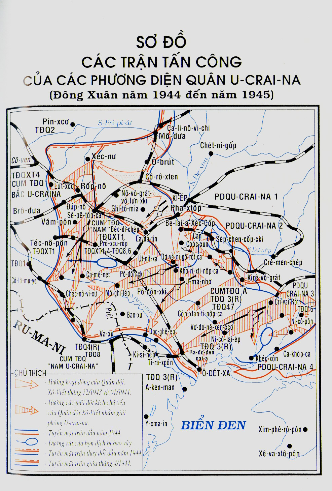

NHÂN dân Bê-lô-ru-xi chịu đau khổ dưới ách chiếm đóng của quân địch ròng rã 3 năm trời. Bọn Hít-le cướp bóc và phá hủy mọi thứ của cải xã hội của nhân dân Bê-lô-ru-xi, tàn phá những thành phố, thiêu cháy 1,2 triệu công trình trong các làng mạc, làm tan nát 7.000 trường học; bọn phát-xít đã tàn sát hơn 2,2 triệu thường dân và cán bộ, chiến sĩ ta bị chúng bắt. Hầu như không một gia đình nào lại không bị đau khổ vì chiến tranh. Nhưng, dù đau khổ đến chừng nào đi nữa, Bê-lô-ru-xi vẫn không chịu khuất phục trước quân thù, nhân dân vẫn kiên cường, không chịu lùi bước đấu tranh chống quân xâm lược.
Được tin Hồng quân đã đánh tan quân Đức ở U-crai-na, hất chúng lùi xa mãi sang phía tây, các lực lượng du kích Bê-lô-ru-xi liền chuẩn bị mở những chiến dịch quyết định.
Đến mùa hè năm 1944 ở Bê-lô-ru-xi đã có 374.000 du kích được trang bị tốt lập thành những đội, đơn vị và binh đoàn lớn. Chỉ đạo chung phong trào du kích là những tổ chức bí mật của Đảng Cộng sản nước Cộng hòa Xô-viết Bê-lô-ru-xi dưới sự lãnh đạo của Ban Chấp hành Trung ương, đứng đầu là đồng chí bí thư thứ nhất P.K. Pô-nô-ma-ren-cô. P.K. Pô-nô-ma-ren-cô đồng thời là thủ trưởng Bộ tham mưu Trung ương phong trào du kích toàn Liên Xô cho đến tận tháng Giêng năm 1945, khi có quyết định của Hội đồng quốc phòng giải tán nó sau khi Liên Xô đã giải phóng được phần lớn những vùng đất đai bị chiếm đóng.
Mấy hôm trước khi Hồng quân mở đợt hoạt động giải phóng Bê-lô-ru-xi, các đội du kích do các đảng bộ thuộc các nước cộng hòa và các tỉnh lãnh đạo đã tiến hành nhiều chiến dịch lớn phá đường sắt đường cái chính, phá cầu, làm tê liệt hậu phương địch vào đúng lúc cần thiết nhất.
Trong chương trước tôi có nói qua cuộc hội nghị thu hẹp tháng 4 ở Đại bản doanh, trong đó Bộ tổng tư lệnh đã có những quyết nghị có tính nguyên tắc về kế hoạch mở những chiến dịch trong mùa hè. Ở đây, tôi muốn kể chi tiết hơn về việc xây dựng kế hoạch chiến dịch Bê-lô-ru-xi.
Sau hội nghị ở Đại bản doanh ít lâu, A.M. Va-xi-lép-xki gửi lên Tổng tư lệnh tối cao những ý kiến của mình, đánh giá tóm tắt tình huống chung và đưa ra những đề nghị chính về mùa hè năm 1944.
Chúng ta đã đi đến chiến cục mùa hè năm 1944 với những kết luận như thế nào?
Trong khi chiến đấu dai dẳng một chọi một chống những lực lượng chủ yếu của nước Đức phát-xít và những nước chư hầu của chúng, Hồng quân đã làm cho quân đội phát-xít Đức bị thất bại nặng trong mùa đông năm 1944. Có 30 sư đoàn và 6 lữ đoàn Đức đã bị tiêu diệt hoàn toàn, 142 sư đoàn và một lữ đoàn bị mất từ một nửa đến hai phần ba quân số. Để chi viện cho những mặt trận của chúng, bộ chỉ huy Đức buộc phải điều 40 sư đoàn và 4 lữ đoàn lấy ở Đức và những nước Tây Âu khác sang mặt trận Xô - Đức. Hồng quân đã giải phóng một vùng đất đai rộng gần 330.000 km vuông, có tới 19 trệu dân đã sống ở đấy hồi trước chiến tranh...
Song, quân đội phát-xít Đức vẫn còn một lực lượng lớn.
Tháng 7-1944 công nghiệp Đức phát triển đạt đến đỉnh cao nhất trong những năm chiến tranh. Trong nửa năm đầu, các công xưởng đã sản xuất hơn 17.000 máy bay, gần 9.000 xe tăng hạng nặng và hạng vừa. Sản xuất thép hơn Liên Xô ba lần.
Trong khi điên cuồng trì hoãn sự thất bại không thể nào tránh khỏi, bọn Hít-le đã động viên hết đợt này đến đợt khác, dốc hết sức người sức của của nhân dân và đất nước, gây ra những tổn thất lớn cho dân tộc Đức.
Quân đội Đức có trong biên chế 344 sư đoàn và 5 lữ đoàn. Bộ phận chủ yếu những binh đoàn tinh nhuệ nhất vẫn nằm trên mặt trận Xô - Đức như trước kia.
Ở đây chúng ta phải chọi với 179 sư đoàn và 5 lữ đoàn Đức, với cả 49 sư đoàn và 18 lữ đoàn các nước chư hầu. Quân đội của chúng có tới 4 triệu người, 49.000 khẩu pháo và súng cối, 5.250 xe tăng và pháo tiến công, gần 2.800 máy bay chiến đấu.
Trong hàng ngũ Hồng quân đang tác chiến có gần 6,1 triệu chiến sĩ và sĩ quan, các phương diện quân có 92.500 khẩu pháo và súng cối, 7.700 xe tăng, 13.400 máy bay.
Trong lịch sử chưa hề thấy nước nào vào phải tiến hành cuộc chiến tranh giải phóng thật to lớn, lại vừa khôi phục nền kinh tế bị tàn phá với tốc độ và quy mô cao đến thế. Mùa đông và mùa xuân năm 1944, Liên Xô đã tăng không ngừng lực lượng kinh tế của mình. Trong nửa năm đầu, đã sản xuất được 15.000 máy bay, gần 14.000 xe tăng hạng nặng, hạng vừa và pháo tự hành, trên 90 triệu đạn đại bác, bom, mìn. Những cố gắng của nhân dân đoàn kết xung quanh Đảng đã đảm bảo được mọi thứ cần thiết để tiêu diệt quân địch.
Cuối tháng 4, Bộ Tổng tư lệnh đã hạ quyết tâm dứt khoát mở chiến dịch mùa hè, trong đó có chiến dịch Bê-lô-ru-xi. A.I. An-tô-nốp đã ra chỉ thị lập những kế hoạch chiến dịch của các phương diện quân, bắt đầu tập trung bộ đội và những dự trữ vật chất cho các phương diện quân.
Phương diện quân Pri-ban-tích 1 được phối thuộc tập đoàn quân xe tăng 1, Phương diện quân Bê-lô-ru-xi 3 được phối thuộc tập đoàn quân cận vệ 11 và quân đoàn xe tăng cận vệ 2. Tập đoàn quân 28, quân đoàn xe tăng cận vệ 9, 1, quân đoàn cơ giới 1 và quân đoàn kỵ binh cận vệ 4 tập trung bên cánh phải Phương diện quân Bê-lô-ru-xi 1; tập đoàn quân xe tăng cận vệ 5 (đội dự bị của Đại bản doanh) tập trung trong dải của Phương diện quân Bê-lô-ru-xi 3.
Giữa tháng 5, A.M. Va-xi-lép-xki trở về Mát-xcơ-va. Thời gian này Bộ Tổng tham mưu đã xây dựng xong dự thảo tất cả những văn kiện chuẩn bị cho kế hoạch chiến dịch “Ba-gra-ti-on”[1] và bảo đảm về vật chất kỹ thuật cho chiến dịch.
Ngày 20-5, Tổng tư lệnh tối cao triệu tập A.M. Va-xi-lép-xki, tôi và A.I. An-tô-nốp về Đại bản doanh để xác định một lần cuối quyết tâm của Bộ Tổng tư lệnh tối cao về kế hoạch chiến cục mùa hè. Như tôi đã nói đến ở trên, kế hoạch có quy định lúc ban đầu sẽ triển khai bộ đội của Phương diện quân Lê-nin-grát và Hạm đội Ban-tích Cờ đỏ tiến công trong những khu vực thuộc eo đất Ca-rê-li, rồi sau đó - vào hạ tuần-6 - sẽ mở chiến dịch ở Bê-lô-ru-xi.
Sau khi xem xét kế hoạch “Ba-gra-ti-on” trong Đại bản doanh, Tổng tư lệnh tối cao lệnh triệu tập các đồng chí tư lệnh phương diện quân I.Kh. Ba-gra-mi-an, I.Đ. Chéc-ni-a-nốp-xki và K.K. Rô-cô-xốp-xki về họp để nghe ý kiến của họ và ra chỉ thị cuối cùng xây dựng kế hoạch của các phương diện quân.
Ngày 22-5, Tổng tư lệnh tối cao tiếp A.M. Va-xi-lép-xki, A.I. An-tô-nốp, K.K. Rô-cô-xốp-xki có cả tôi cùng tham dự và ngày 23-5, tiếp I.Kh. Ba-gra-mi-an và I.Đ. Chéc-ni-a-nốp-xki. Các đồng chí tư lệnh phương diện quân được Bộ Tổng tham mưu thông báo trước về những chiến dịch sắp tới, nên khi về Đại bản doanh đều mang theo dự án kế hoạch hành động của bộ đội mình.
Do việc xây dựng những kế hoạch trong Bộ Tổng tham mưu và trong bộ tham mưu các phương diện quân tiến hành song song (khi chuẩn bị cho những chiến dịch lớn thường làm như vậy), và bộ tư lệnh các phương diện quân, Bộ Tổng tham mưu và phó Tổng tư lệnh tối cao lại thường tiếp xúc rất chặt chẽ với nhau, nên dự án những kế hoạch của các phương diện quân hoàn toàn phù hợp với ý định của Đại bản doanh do đó nó được Tổng tư lệnh tối cao phê chuẩn ngay.
Sau đó A.M. Va-xi-lép-xki và tôi được lệnh phối hợp hành động của bộ đội các phương diện quân sau: A.M. Va-xi-lép-xki được ủy nhiệm phối hợp hành động của Phương diện quân Bri-ban-tích 1 và Bê-lô-ru-xi 3, tôi phối hợp hành động của các Phương diện quân Bê-lô-ru-xi 1 và 2. Đại bản doanh cử tướng Stê-men-cô, cục trưởng cục tác chiến Bộ Tổng tham mưu cùng với một tổ sĩ quan Bộ Tổng tham mưu xuống Phương diện quân Bê-lô-ru-xi 2 giúp đỡ tôi.
Ngày 4-6, A.M. Va-xi-lép-xki đi xuống bộ đội để chuẩn bị tại chỗ cho chiến dịch “Ba-gra-ti-on, còn tôi sáng ngày hôm sau, ngày 5-6, lúc 8 giờ thì đến sở chỉ huy của Phương diện quân Bê-lô-ru-xi 1.
Ở một vài giới quân sự có lời đồn đại về “hai mũi đột kích chủ yếu” trên hướng Bê-lô-ru-xi bằng lực lượng của Phương diện quân Bê-lô-ru-xi 1, và tựa như K.K. Rô-cô-xốp-xki đã giữ quan điểm này khi làm việc với Tổng tư lệnh tối cao. Điều đó là không có căn cứ.
Cả hai mũi đột kích do phương diện quân đề ra đã được I.V.Xta-lin sơ bộ phê chuẩn từ ngày 20-5 theo dự án của Bộ Tổng tham mưu, tức là trước ngày tư lệnh Phương diện quân Bê-lô-ru-xi 1 đến Đại bản doanh.
Phát biểu ở đây cũng không thừa rằng, trong lý luận quân đội Xô-viết không khi nào qui định một phương diện quân được mở hai mũi đột kích chủ yếu và nếu như cả hai mũi đột kích tương đương với nhau cả về lực lượng và ý nghĩa, thì thường gọi là “những mũi đột kích mạnh” hoặc “những cụm đột kích”. Tôi nhấn mạnh chỗ này để khỏi có sự lầm lẫn trong thuật ngữ chiến dịch - chiến lược.
Dựa vào kế hoạch chiến dịch - chiến lược của chiến dịch “Ba-gra-ti-on” đã được phê chuẩn và yêu cầu của các phương diện quân, Bộ Tổng tham mưu có sự tham gia của những đồng chí A.A. Nô-vi-cốp, N.N. Vô-rô-nốp, N.Đ. Ya-cốp-lép, A.V. Khru-lép, I.T. Pê-rê-xứp-kin, Ya.N. Phê-đô-ren-cô và những đồng chí chỉ huy, chuyên gia lỗi lạc khác đã xây dựng kế hoạch bảo đảm vật chất kỹ thuật cho bộ đội tham gia chiến dịch. Ngày 31-5, tư lệnh các phương diện quân nhận được mệnh lệnh của Đại bản doanh, và chấp hành mệnh lệnh đó, đã bắt tay vào chuẩn bị cụ thể cho bộ đội hành động trong chiến dịch sắp tới.
Trong kế hoạch của Đại bản doanh quy định mở ba mũi đột kích mạnh.
Phương diện quân Pri-ban-tích 1 và Bê-lô-ru-xi 3 đột kích và hướng chung tới Vi-ni-út.
Phương diện quân Bê-lô-ru-xi l - tới Ba-ra-nô-vi-chi.
Phương diện quân Bê-lô-ru-xi 2 hiệp đồng với cánh quân trái của Phương diện quân Bê-lô-ru-xi 3 và cánh phải của Phương diện quân Bê-lô-ru-xi 1, đột kích theo hướng chung tới Min-xcơ...
Nhiệm vụ trước mắt của Phương diện quân Pri-ban-tích 1 và Bê-lô-ru-xi 3 là tiêu diệt cụm địch ở Vi-tép-xcơ, đưa bộ đội xe tăng và cơ giới vào đột phá và phát triển mũi đột kích chủ yếu sang phía tây dùng cụm quân sườn bên trái của mình đánh vu hồi vào cụm Bô-ri-xốp - Min-xcơ của quân Đức.
Phương diện quân Bê-lô-ru-xi 1 có nhiệm vụ tiêu diệt cụm quân địch đóng ở Giơ-lô-bin - Bô-brui-xcơ và cho bộ đội cơ động tiến vào chiến đấu, phát triển mũi đột kích chủ yếu tới Xlút-xcơ - Ba-ra-nô-vi-chi, từ phía nam và tây nam đánh vu hồi vào cụm địch đóng ở Min-xcơ.
Phương diện quân Bê-lô-ru-xi 2 đột kích vào hướng Mô-ghi-lép - Min-xcơ.
Khi ta bắt đầu tiến công thì tiền duyên phòng ngự của cụm tập đoàn quân “Trung tâm” quân Đức chạy từ Pô-lốt-xcơ tới Vi-tép-xcơ và kéo dài theo tuyến Oóc-sa - Giơ-lô-bin - Ca-pát-kê-vi-chi - Gít-cô-vi-chi và men theo con sông Pri-pi-át. Các thành phố Pô-lốt-xcơ, Vi-tép-xcơ, Oóc-sa, Mô-ghi-lép còn nằm trong tay giặc.
Những thành phố lớn này cộng với những con sông Đơ-nép, Đrút, Bê-rê-di-na, Xvi-xlốt và một loạt những sông con, suối ngập bùn tạo nên cho địch một cơ sở tốt để bố trí phòng ngự sâu thành nhiều tuyến, yểm hộ cho hướng chiến lược phía tây Vác-xô-vi - Béc-lanh vô cùng quan trọng của chúng. Mặc dầu Đại bản doanh đã tập trung khá nhiều lực lượng để tiêu diệt cụm tập đoàn quân “ Trung tâm” của địch, song chúng tôi. vẫn cho rằng muốn cho chiến dịch thắng lợi, cần phải chuẩn bị thật tỉ mỉ cho bộ đội tham gia chiến dịch “Ba-gra-ti-on”.
Trước lúc ra mặt trận, tôi và A.M. Va-xi-lép-xki có gặp nhau, và cùng đặc biệt quan tâm tới những mặt mạnh, mặt yếu trong phòng ngự của địch, trao đổi với nhau cả những biện pháp cần phải tiến hành trong các cơ quan tham mưu và bộ đội. Chúng tôi đã thỏa thuận với A.I. An-tô-nốp - lúc này tạm thời quyền Tổng tham mưu trưởng - là phải kiểm tra việc tập trung bộ đội, những dự trữ vật chất và những đội dự bị của Đại bản doanh, và cả những vấn đề thông tin liên lạc; thông báo cho chúng tôi biết về những biện pháp của Đại bản doanh trên những hướng khác.
Phải chuyển giao cho các phương diện quân trong một thời gian ngắn nhất một khối lượng phương tiện vật chất kỹ thuật hết sức to lớn.
Theo tính toán sơ bộ của Bộ Tổng tham mưu, để bảo đảm cho chiến dịch “ Ba-gra-ti-on” phải giao cho bộ đội chừng 40 vạn tấn đạn dược, 30 vạn tấn nhiên liệu, 50 vạn tấn lương thực và cỏ khô. Phải tập trung tại những khu vực đã định 5 tập đoàn quân bộ đội hợp thành, 2 tập đoàn quân xe tăng và 1 tập đoàn quân không quân và cả tập đoàn quân 1 Bộ đội Ba Lan. Ngoài ra, Đại bản doanh còn lấy trong đội dự bị của mình chuyển thuộc cho các phương diện quân 5 quân đoàn xe tăng độc lập, 2 quân đoàn cơ giới và 4 quân đoàn kỵ binh, hàng chục trung đoàn và lữ đoàn độc lập của mọi binh chủng và bố trí lại căn cứ của 11 quân đoàn không quân.
Mọi công việc chuyên chở trên phải làm hết sức cẩn thận để khỏi lộ việc chuẩn bị tiến công của các phương diện quân. Việc này rất quan trọng để đánh thắng trong chiến dịch tới, vì theo những tin tức của trinh sát ta, bộ tổng chỉ huy quân Đức đang chờ mũi đột kích đầu tiên trong thời gian mùa hè của chúng ta ở U-crai-na, chứ không phải ở Bê-lô-ru-xi. Bọn chúng chắc hẳn đã căn cứ vào chỗ địa hình ở đây có rừng và đầm lầy, chúng ta không thể điều quân tới Bê-lô-ru-xi và không thể sử dụng được một cách thích đáng 4 tập đoàn quân xe tăng đang nằm ở U-crai-na.
Song, quân địch đã tính nhầm.
Theo kế hoạch của Đại bản doanh, bộ đội của Phương diện quân U-crai-na 1, trong giai đoạn 2 của chiến dịch Bê-lô-ru-xi sẽ bước vào chiến đấu, khi nào bộ đội cánh phải của Phương diện quân Bê-lô-ru-xi 1 đánh tan cụm địch đóng ở Bô-brui-xcơ - Min-xcơ - Lút-xcơ và tiến tới tuyến Vôn-cô-vư-xcơ - Pru-gia-nư.
Đại bản doanh cho rằng mũi đột kích này của Phương diện quân Bê-lô-ru-xi 1 có một ý nghĩa lớn, nên sẽ gửi tới đây những lực lượng và phương tiện chủ yếu.
Vì nhiệm vụ của tôi là phối hợp hành động của bộ đội Phương diện quân Bê-lô-ru-xi 1 và 2, và sang đến giai đoạn 2 mới phối hợp cả bộ đội của Phương diện quân U-crai-na 1, nên ở đây chủ yếu tôi sẽ nói tới những hành động của hai phương diện quân trên.
Sáng sớm ngày 5-6, được sự ủy nhiệm của Tổng tư lệnh tối cao, tôi đến sở chỉ huy lâm thời của phương diện quân Bê-lô-ru-xi 1 ở Đu-rê-vi-chi, gặp K.K. Rô-cô-xốp-xki, ủy viên Hội đồng quân sự N.A. Bun-ga-nin và tham mưu trưởng M.X. Ma-li-nin.
Sau khi đã trao đổi sơ bộ với nhau về những vấn đề có liên quan đến kế hoạch chiến dịch, cùng với K.K. Rô-cô-xốp-xki và các tư lệnh tập đoàn quân, tư lệnh tập đoàn quân không quân, tướng X.I. Ri-đen-cô, tư lệnh pháo binh phương diện quân, tướng V.I. Ca-da-cốp, tư lệnh bộ đội xe tăng và cơ giới, tướng G.N. Oóc-lôm, chúng tôi đã thảo luận tỉ mỉ về tình hình bên cánh phải phương diện quân và đã thống nhất với nhau đặt kế hoạch và đề ra những biện pháp thực hiện có liên quan tới việc chuẩn bị chiến dịch sắp đến.
Ở đây chúng tôi đã đặc biệt chú ý nghiên cứu tỉ mỉ địa hình trong khu vực tác chiến, trinh sát hệ thống phòng ngự địch trên tất cả chiều sâu chiến thuật của nó và xem xét cả công việc chuẩn bị của bộ đội, của các cơ quan tham mưu và công tác hậu cần bảo đảm cho việc mở đầu chiến dịch.
Hai ngày tiếp sau, ngày 6 và 7 tháng 6, chúng tôi cùng với tư lệnh phương diện quân K.K. Rô-cô-xốp-xki, đại diện của Đại bản doanh N.Đ. Ya-cốp-lép và tướng V.I. Ca-da-cốp đã nghiên cứu kĩ tình huống ở khu vực Rô-ga-chép - Giơ-lô-bin tại những khu vực của tập đoàn quân 3 và 48. Ở đây, trong đài quan sát của tư lệnh tập đoàn quân A.V. Goóc-ba-tốp, chúng tôi đã nghe báo cáo của tướng V.G. Giô-lu-đép, quân đoàn trưởng quân đoàn bộ binh 35 và của tướng V.K. Ua-ba-nô-vích, quân đoàn trưởng quân đoàn bộ binh 41.
Ngày 7-6, chúng tôi vẫn làm việc như vậy ở khu vực của tập đoàn quân 65, nghiên cứu thật chi tiết địa hình và trận địa phòng ngự của quân địch tại khu vực của quân đoàn bộ binh 18, của các sư đoàn bộ binh cận vệ 69 và 44, là những nơi dự kiến mở mũi đột kích chủ yếu.
Chiếu theo kế hoạch của Đại bản doanh, đại tướng K.K. Rô-cô-xốp-xki, tư lệnh phương diện quân, sau khi trinh sát tỉ mỉ toàn bộ tình hình, đã hạ quyết tâm tổ chức thành hai cụm để đột phá phòng ngự địch: một ở phía bắc Rô-ga-chép và một ở phía nam Pa-ri-chi. Nhiệm vụ trước mắt của hai cụm này là tiêu diệt quân địch đang chống cự ở phía trước, và bằng những mũi đột kích khép lại của cả hai cụm, sẽ bao vây, tiêu diệt cụm địch đóng ở Giơ-lô-bin - Bô-brui-xcơ.
Sau khi giải phóng thành phố Bô-brui-xcơ, bộ phận chủ yếu của phương diện quân phải tiến công theo hướng chung tới Ba-ra-nô-vi-chi qua Xlút-xcơ. Một phần lực lượng sẽ phát triển tiến công qua Ô-xi-pô-vi-chi, Pu-khô-vi-chi tới Min-xcơ, hiệp đồng ở đây với Phương diện quân Bê-lô-ru-xi 2. Theo tính toán sơ bộ của chúng tôi, bộ đội và phương tiện thuộc biên chế của Phương diện quân Bê-lô-ru-xi 1 đủ sức hoàn thành những nhiệm vụ trên.
Cụm lực lượng tiến công vào hướng Rô-ga-chép gồm tập đoàn quân 3 của trung tướng A.V. Goóc-ba-tốp, tập đoàn quân 48 của trung tướng P.L. Rô-ma-nen-cô và quân đoàn xe tăng 9 của thiếu tướng bộ đội xe tăng B.X. Ba-kha-rốp.
Cụm lực lượng tiến công vào hướng Pa-ri-chi gồm tập đoàn quân 65 của trung tướng P.I. Ba-tốp, tập đoàn quân 28 của trung tướng A.A. Lu-chin-xki. Tập đoàn quân kỵ binh cơ giới của trung tướng I.A. Pli-ép và quân đoàn xe tăng cận vệ 1 của thiếu tướng K.M. Pa-nốp có nhiệm vụ tiến vào đột phá cụm địch đóng ở phía nam Pa-ri-chi.
Tập đoàn quân không quân 16 do thượng tướng không quân S T. Ru-đen-cô làm tư lệnh yểm hộ cho hai cụm trên hoạt động.
Giang đội Đơ-nép do đại tá hải quân V.V. Gri-gô-ri-ép chỉ huy, chuyển thuộc phương diện quân về mặt chiến dịch.
Bộ đội của Phương diện quân Bê-lô-ru-xi 1, nhất là bộ đội của cụm tiến công vào phía nam Pa-n-chi, vấp phải khó khăn chủ yếu là phải hoạt động trong điều kiện địa hình rừng, đầm lầy, rất khó vượt qua...
Tôi biết rõ các địa phương này, vì đã công tác ở đây hơn 6 năm, và thời gian đó, tôi đã từng đi lại khắp vùng nhiều lần. Tôi đã có dịp đi săn vịt trong các đầm hồ ở khu vực Pa-ri-chi, vịt ở đây rất sẵn, và cả lợn rừng cũng vô số...
Như chúng ta đã phỏng đoán, bộ chỉ huy quân Đức ít chờ đợi những mũi đột kích của bộ đội ta ở khu vực này nhất. Vì vậy, phòng ngự của chúng ở đây thực ra chỉ có từng cứ điểm một, không bố trí thành tuyến phòng ngự liên tục.
Còn ở Rô-ga-chép thì khác hẳn. Phòng ngự của chúng mạnh hơn, và những đường tiến quân tiếp cận tới đó đều nằm trong phạm vi kiểm soát của hệ thống hỏa lực địch.
Như tôi đã nói ở trên, Phương diện quân Bê-lô-ru-xi 2 lúc này do thượng tướng G.Ph. Da-kha-rốp làm tư lệnh (ủy viên Hội đồng quân sự là L.Đ. Mê-khơ-lít, tham mưu trưởng là trung tướng A.N. Bô-gô-liu-bốp) có nhiệm vụ mở mũi đột kích thứ yếu vào hướng Mô-ghi-lép - Min-xcơ. Ở đây không có những phương tiện đột phá mạnh để cho tất cả những tập đoàn quân thê đội 1 có thể tiến công cùng một lúc.
Thật vậy, nếu như những quả đấm đột kích của Phương diện quân Bê-lô-ru-xi 1 và Bê-lô-ru-xi 2 chưa tiến được sâu vào đội hình bố trí của cụm tập đoàn quân “Trung tâm” của địch, thì việc hất địch ra khỏi khu vực phía đông Mô-ghi-lép cũng không có ý nghĩa.
Theo quyết tâm của tướng G.Ph. Da-kha-rốp, tập đoàn quân 49 được tăng cường do tướng L.T. Gri-sin làm tư lệnh sẽ mở mũi đột kích vào hướng Mô-ghi-lép. Những tập đoàn quân còn lại (33 và 50) tiến hành những hoạt động kiềm chế và chuyển sang tiến công muộn hơn, khi sức chống cự của quân địch phòng ngự trên những hướng khác đã bị bẻ gãy.
Ngày 8 và 9 tháng 6, chúng tôi cùng với các tướng N.Đ. Ya-cốp-lép, X.M. Stê-men-cô và bộ tư lệnh phương diện quân đã tiến hành chuẩn bị tỉ mỉ cho chiến dịch của Phương diện quân Bê-lô-ru-xi 2. Tướng X.M. Stê-men-cô đã giúp đỡ đắc lực cho tướng G.Ph. Da-kha-rốp là người mới được bổ nhiệm làm tư lệnh phương diện quân.
Lúc chúng tôi đến chỗ tướng G.Ph. Da-kha-rốp, đồng chí đã trình bày thật rõ ràng và có căn cứ quyết tâm tiến hành chiến dịch của mình. Đồng thời chúng tôi đã nghe ý kiến và quyết tâm của tư lệnh tập đoàn quân không quân K.A. Véc-si-nin và của các đồng chí tư lệnh, chủ nhiệm các binh chủng trong phương diện quân.
Tôi nhớ, chúng tôi không có nhận xét đặc biệt gì bổ sung thêm vào mục tiêu, nhiệm vụ và tổ chức lực lượng trong kế hoạch của chiến dịch.
Chúng tôi quyết định sáng ngày 9-6 cùng với tư lệnh Phương diện quân G.Ph. Da-kha-rốp, N.Đ. Ya-cốp-lép, X.M. Stê-men-cô đến tập đoàn quân 49 của I.T. Gri-sin để đích thân nghiên cứu tiền duyên và chiều sâu phòng ngự của địch. Trước hết, chúng tôi đến đài quan sát của quân đoàn trường quân đoàn bộ binh 70, tướng V.G. Tê-ren-ti-ép. Đồng chí đã báo cáo tỉ mỉ những ý kiến nhận xét của mình về tình huống.
Đến cuối ngày, chúng tôi đã có thể ấn định xong những nhiệm vụ trước mắt của công tác trinh sát hệ thống hỏa lực, xác định được kế hoạch bắn cho pháo binh, kế hoạch hoạt động của không quân và kết luận được về việc bố trí đội hình chiến dịch chiến thuật để tiến công.
Tôi thấy có thể giao cho tướng X.M. Stê-men-cô, đại diện của Bộ Tổng tham mưu phụ trách việc chuẩn bị chiến dịch cho Phương diện quân Bê-lô-ru-xi 2. Còn tôi thì trước tiên phải lo chuẩn bị cho Phương diện quân Bê-lô-ru-xi 1, là phương diện quân đảm đương nhiệm vụ chủ yếu.
Chúng tôi đã gặp lại tư lệnh phương diện quân cùng với những cán bộ gần gũi của đồng chí khi tôi trở về tập đoàn quân 3 của tướng A.V. Goóc-ba-tốp. Tôi gọi dây nói báo cáo với Tổng tư lệnh tối cao về tiến trình chuẩn bị cho những hành động sắp đến của các phương diện quân. Nhận thấy kế hoạch chuyển vận bộ đội và dụng cụ chiến tranh cho các phương diện quân không được thực hiện đúng hạn, tôi đề nghị với Tổng tư lệnh tối cao chỉ thị cho Bộ ủy viên nhân dân giao thông, và A.V. Khru-lép phải quan tâm tới vấn đề này. Tôi nói, nếu không được như vậy, thời hạn bắt đầu chiến dịch sẽ phải lui lại.
Tôi còn đề nghị với Tổng tư lệnh tối cao cho sử dụng toàn bộ không quân hoạt động tầm xa vào chiến dịch Bê-lô-ru-xi và hoãn việc bắn phá những mục tiêu trên lãnh thổ Đức vào thời gian sau.
Tổng tư lệnh tối cao đồng ý, và ra lệnh cử ngay nguyên soái không quân A.A. Nô-vi-cốp và nguyên soái, tư lệnh không quân hoạt động tầm xa A.E. Gô-lô-va-nốp đến chỗ tôi. Bản thân tôi đã có nhiều dịp công tác với các đồng chí này trong tất cả những chiến dịch rất quan trọng trước đây, các đồng chí là những người chỉ huy thông thạo giúp đỡ giải quyết tốt nhiều vấn đề của các phương diện quân.
Cùng với các đồng chí A.A. Nô-vi-cốp, A.E. Gô-lô-va-nốp, X.I. Ru-đen-cô và K.A. Vée-si-nin, chúng tôi đã thảo luận tỉ mỉ về tình hình, mục tiêu, nhiệm vụ và kế hoạch sử dụng hiệp đồng những tập đoàn quân không quân với không quân hoạt động tầm xa để mở những trận đột kích vào các cơ quan tham mưu, trung tâm thông tin của các đơn vị cỡ chiến dịch, những đội dự bị và những mục tiêu tối quan trọng khác. Ngoài ra còn xét tới những vấn đề cơ động của không quân các phương diện quân để phục vụ mục đích chung. Theo chỉ thị của A.M. Va-xi-lép-xki, đã tách ra chừng 350 máy bay hạng nặng để chi viện cho Phương diện quân Bê-lô-ru-xi 3 hoạt động.
Ngày 14 và 15 tháng 6, tư lệnh Phương diện quân Bê-lô-ru-xi 1 đã tiến hành tập bài huấn luyện chuẩn bị cho chiến dịch sắp tới trong hai tập đoàn quân 65 và 28. Chúng tôi cùng với một nhóm các tướng lĩnh của Đại bản doanh cũng có mặt ở đấy.
Tham gia tập bài có các đồng chí quân đoàn trưởng, sư đoàn trưởng, tư lệnh pháo binh và chủ nhiệm binh chủng trong các tập đoàn quân. Trong quá trình tập bài đã nghiên cứu tỉ mỉ nhiệm vụ của các binh đoàn bộ binh và xe tăng, kế hoạch pháo kích và hiệp đồng với không quân. Chú ý chủ yếu tập trung vào việc nghiên cứu thật cặn kẽ đặc điểm địa hình trong dải hoạt động của bộ đội, tổ chức phòng ngự của địch và những phương pháp vận động thật nhanh ra đường cái Xlút-xcơ - Bô-brui-xcơ. Từ đấy, nếu tiến được ra và chiếm được Bô-brui-xcơ sẽ có khả năng cắt đường rút quân của cụm địch đóng ở Giơ-lô-bin, Bô-brui-xcơ.
Ba ngày tiếp sau, những bài tập huấn luyện như vậy lại được tổ chức trong các tập đoàn quân 3, 48, 49. Chúng tôi được dịp làm quen với những đồng chí cán bộ sẽ chỉ huy tác chiến để tiêu diệt một số lớn quân địch thuộc cụm tập đoàn quân “Trung tâm” trên hướng chiến lược quan trọng nhất này. Trọng trách của các đồng chí này rất nặng, vì có tiêu diệt cụm tập đoàn quân “Trung tâm” thì mới giải quyết được nhiệm vụ quét sạch địch ra khỏi đất đai Bê-lô-ru-xi và miền Đông Ba Lan.
Cũng trong thời kỳ này, đã tiến hành huấn luyện quân sự và chính trị cho tất cả các đơn vị và phân đội của hai phương diện quân. Trong khi học tập, đã nghiên cứu các nhiệm vụ hỏa lực, chiến thuật, kỹ thuật xung phong và tiến công có hiệp đồng với xe tăng, pháo binh và không quân, đã làm cho bộ đội quán triệt tình hình và nhiệm vụ. Trước một chiến dịch lớn hồi ấy, nhất thiết phải tiến hành huấn luyện như vậy và đó là hoàn toàn đúng đắn. Bộ đội chiến đấu hiệp đồng tốt hơn, có kết quả nhiều hơn và thiệt hại cũng ít hơn.
Cơ quan tham mưu của đơn vị, binh đoàn và tập đoàn quân nghiên cứu tỉ mỉ những vấn đề chỉ huy và thông tin liên lạc. Các sở chỉ huy và đài quan sát được chuyển lên phía trước, cấu trúc ngầm xuống đất và được thiết bị một hệ thống quan sát và thông tin liên lạc; thứ tự di chuyển các sở chỉ huy, đài quan sát và động tác chỉ huy bộ đội trong quá trình đuổi đánh địch cũng được xác định.
Cơ quan trinh sát của các phương diện quân, tập đoàn quân và bộ đội đã tìm hiểu tỉ mỉ thêm hệ thống hỏa lực phòng ngự của địch, các dự trữ kỹ thuật và đội dự bị của chúng, lập các bản đồ tình huống và cung cấp những bản đồ ấy cho các đơn vị.
Hậu cần của phương diện quân cũng đã tiến hành một khối lượng công tác cực lớn nhằm bảo đảm chuyển vận thật nhanh chóng và bí mật cho bộ đội những khí tài, đạn dược, nhiên liệu và lương thực. Mặc dầu có rất nhiều khó khăn, nhưng mọi việc vẫn hoàn thành đúng hạn. Tuy địa hình rất phức tạp, nhưng bộ đội của cả hai phương diện quân khi chuyển sang tiến công vẫn được bảo đảm kịp thời về mọi thứ cần thiết cho chiến đấu.
Ngày 22-6, cả hai phương diện quân đã tiến hành trinh sát chiến đấu. Kết quả là đã xác định được tình hình bố trí của hệ thống hỏa lực địch ở sát ngay tiền duyên của chúng và vị trí của mấy đội pháo binh trước kia chưa phát hiện được.
Chiến dịch Bê-lô-ru-xi nhằm mục đích chiếm bằng được một vùng đất đai rộng lớn: hơn 1.000 km theo chính diện từ tây Đvi-na đến Pri-pi-át, chừng 600 km theo chiều sâu từ Đơ-nép đến Vi-xla và Na-rép. Dự kiến sẽ phải đụng độ trong những trận giao chiến khốc liệt với 80 vạn binh lính và sĩ quan địch, được trang bị 9.500 khẩu pháo và súng cối, 900 xe tăng và pháo tiến công, 1.300 máy bay chiến đấu, sẽ phải tiến sâu vào phòng ngự có chuẩn bị sẵn của chúng khoảng 250 - 270 km.
Cuộc tiến công của bộ đội Liên Xô ở Bê-lô-ru-xi trùng vào dịp kỷ niệm năm thứ ba của cuộc chiến tranh. Trong ba năm đó đã xảy ra nhiều biến cố lịch sử. Sau khi tiêu diệt quân đội phát-xít trong hàng loạt trận tổng công kích nối tiếp nhau, Hồng quân Liên Xô đang hoàn thành công cuộc giải phóng Tổ quốc khỏi bọn giặc hung ác nhất. Nay, bước vào chiến dịch lịch sử mới, các chiến sĩ chúng ta lòng đầy tin tưởng nhất định sẽ tiêu diệt được cụm tập đoàn quân “Trung tâm” của Đức.
Ngày 6-6, quân đội Đồng minh đã đổ bộ vào Noóc-măng-đi và mở mặt trận thứ hai ở châu Âu. Tất nhiên điều đó đã khích lệ bộ đội ta. Mặc dầu vận mệnh của nước Đức phát-xít thực ra đã được quyết định từ trước rồi, song các chiến sĩ Xô-viết vẫn hân hoan chào mừng việc mở mặt trận thứ hai, vì họ hiểu rằng, như vậy càng chóng tiêu diệt chủ nghĩa phát-xít và càng sớm chấm dứt chiến tranh.
Ngày 23-6, Phương diện quân Pri-ban-tích 1 (tư lệnh, thượng tướng I.Kh. Ba-gra-mi-an; ủy viên Hội đồng quân sự, tướng Đ.X Lê-ô-nốp; tham mưu trưởng, tướng V.V. Cu-ra-xốp), Phương diện quân Bê-lô-ru-xi 3 (tư lệnh, thượng tướng Chéc-ni-a-khốp-xki; ủy viên Hội đồng quân sự, tướng V.E. Ma-ca-rốp; tham mưu trưởng, tướng A.P. Pô-crốp-xki) và Phương diện quân Bê-lô-ru-xi 2 do thượng tướng G.Ph. Da-kha-rốp làm tư lệnh, bắt đầu tổng tiến công. Hôm sau, Phương diện quân Bê-lô-ru-xi 1 do tướng K.K. Rô-cô-xốp-xki chỉ huy cũng chuyển sang tiến công.
Trong vùng sau lưng quân địch, các đơn vị, binh đoàn và đội du kích bắt đầu hoạt động tích cực theo kế hoạch phối hợp trước với các phương diện quân. Trong bộ tham mưu các phương diện quân đã lập các phòng dân quân để chỉ đạo phong trào du kích với nhiệm vụ giữ vững liên lạc, bảo đảm vật chất kỹ thuật và phối hợp hành động với các đơn vị du kích. Phải nói rằng, trong chiến dịch Bê-lô-ru-xi, các đơn vị và đội du kích đã triển khai những hoạt động tích cực vô cùng lớn lao. Đặc điểm địa hình rừng rú đã góp phần thuận lợi đáng kể cho các đơn vị du kích hoạt động. Khi bộ đội ta rút lui năm 1941, các chiến sĩ và sĩ quan bộ đội ta ở lại những vùng này nhiều hơn các vùng khác.
Ngay trong những ngày tiến công đầu tiên ở Bê-lô-ru-xi, trên khắp mọi hướng, đều diễn ra những trận giao tranh quyết liệt trên mặt đất và cả ở trên không, mặc dầu điều kiện khí tượng có hạn chế phần nào hoạt động của không quân cho cả hai bên. Qua Bộ Tổng tham mưu, tôi được biết là ở chỗ A.M. Va-xi-lép-xki, việc đột phá phòng ngự địch đang tiến triển tết. Điều đó làm chúng tôi rất vui mừng.
Phương diện quân Bê-lô-ru-xi 2 cũng đã thu được những kết quả tốt ở đấy, tập đoàn quân 49 của tướng I.T. Gri-sin đột phá thắng lợi phòng ngự địch trên hướng Mô-ghi-lép, phiếm được căn cứ bàn đạp ở Đơ-nép trong hành tiến.
Mũi đột kích của Phương diện quân Bê-lô-ru-xi 1 vào Pa-ri-chi cũng phát triển đúng theo kế hoạch. Quân đoàn xe tăng 1 của tướng N.Ph. Pa-nốp tiến vào đột phá, ngay trong ngày đầu đã thọc sâu vào phía Bô-brui-xcơ được 20 km, do đó tạo điều kiện cho sáng ngày hôm sau cụm kỵ binh cơ giới của tướng I.A. Pli-ép có thể bước vào chiến đấu.
Ngày 25-6, cụm kỵ binh cơ giới của I.A. Pli-ép và quân đoàn xe tăng 1 của M.Ph. Pa-nốp tiêu diệt được một bộ phận quân địch đang rút lui, đã nhanh chóng tiến lên phía trước. Mũi đột kích của tập đoàn quân 26 và 65 phát triển vững vàng. Các đơn vị xe tăng và pháo binh băng qua đoạn đường xuyên rừng trên hướng Pa-ri-chi đã quần nát cả những vùng đầm lầy làm cho xe kéo sau này rất khó vượt qua.
Các đơn vị công trình và chiến sĩ các binh chủng phấn khởi trước thắng lợi của trận đánh chọc thủng phòng ngự địch, đang cố gắng hoàn thành thật nhanh một con đường lát gỗ. Chẳng bao lâu, con đường ấy đã làm xong, giúp cho công tác hậu cần trở nên dễ dàng nhiều.
Trong cuốn “Cuộc chiến tranh giữ nước vĩ đại của Liên Xô năm 1941 - 1945. Sơ lược lịch sử”, khi viết về chiến dịch Bê-lô-ru-xi[2], việc trình bày diễn biến những sự kiện ở Rô-ga-chép chưa được hoàn toàn đúng. Cuốn sánh giải thích rằng bước ngoặt của những sự kiện ở khu vực Rô-ga-chép là do trận chiến đấu thắng lợi của các đơn vị tác chiến ở Pa-ri-chi. Thật ra, mọi việc diễn ra có hơi khác.
Lúc chuẩn bị chiến dịch, vì chưa trinh sát đầy đủ phòng ngự địch trên hướng Rô-ga-chép - Bô-brui-xcơ, nên chúng tôi đã đánh giá thấp sức kháng cự của chúng, vì vậy đã giao cho tập đoàn quân 5 và 48 những đoạn đột phá quá rộng. Thêm nữa, những tập đoàn quân ấy lại không có đủ những phương tiện đột phá. Lúc ấy, là đại diện của Đại bản doanh, tôi cũng không kịp thời giúp cho bộ tư lệnh phương diện quân sửa chữa thiếu sót này.
Cần phải nói thêm một nguyên nhân làm cho bộ đội ta hành động chậm trễ trong khu vực này. Khi hạ quyết tâm đột phá phòng ngự địch, tư lệnh tập đoàn quân 3, trung tướng A.V. Goóc-ba-tốp đề nghị cho quân đoàn xe tăng của B.X. Ba-kha-rốp mở mũi đột kích hơi chệch sang phía bắc có nghĩa là từ khu vực rừng rú lầy lội mà ở đó theo ý kiến của đồng chí, phòng ngự quân địch rất yếu. Ý kiến đó của A.V. Goóc-ba-tốp không được chấp nhận và đồng chí được lệnh chuẩn bị đột phá trong đoạn mà bộ tư lệnh phương diện quân đã chỉ thị, vì rằng, nếu hành động khác đi sẽ buộc cả mũi đột kích chủ yếu của tập đoàn quân 48 cũng phải chuyển dịch lên phía bắc.
Chiến dịch bắt đầu, tốc độ đột phá tuyến phòng ngự địch phát triển chậm. Thấy tình hình như vậy, A.V. Goóc-ba-tốp đề nghị cho phép thực hiện kế hoạch mà đồng chí đã đề ra lúc ban đầu, có nghĩa là cho quân đoàn xe tăng đột kích vào đoạn trận địa quá lên phía bắc. Tôi ủng hộ đề nghị của A.V. Goóc-ba-tốp. Chiến dịch thành công. Quân địch bị tan vỡ và các chiến sĩ xe tăng của B.X. Ba-kha-rốp đánh thắng ở bên sườn, đã tiến nhanh về phía Bô-brui-xcơ cắt con đường rút lui độc nhất của địch qua sông Bê-rê-di-na.
Sau khi bộ đội ta cơ động giành được thắng lợi đó, quân Đức bắt đầu rút khỏi tuyến Giơ-lô-bin - Rô-ga-chép, nhưng đã muộn. Ngày 26-6, chiếc cầu độc nhất ở Bô-brui-xcơ đã nằm trong tay các chiến sĩ xe tăng của B.X. Ba-kha-rốp.
Quân đoàn xe tăng của M.Ph. Pa-nốp tiến vào khu vực tây bắc Bô-brui-xcơ cắt mọi đường rút của bọn địch đóng trong thành phố.
Như vậy là, ngày 27-6 ở khu vực Bô-brui-xcơ đã tạo nên hai chiếc lòng chảo hãm quân đoàn bộ binh 35 và quân đoàn xe tăng 41 của Đức tổng số tới 4 vạn người..
Tôi không được quan sát cảnh quân địch bị tiêu diệt ở Bô-brui-xcơ nhưng cũng được thấy chúng bị đánh tan ở đông nam Bô-brui-xcơ. Hàng trăm máy bay ném bom của tập đoàn quân 16 của X.I. Ru-đen-cô hiệp đồng với tập đoàn quân 48 đột kích liên tục vào quân địch. Trên bãi chiến trường bốc lên nhiều đám cháy: hàng trăm xe vận tải, xe tăng và nhiên liệu của địch bị thiêu hủy. Khắp chiến trường đỏ rực ngọn lửa báo trước điềm chẳng lành. Từng đoàn máy bay ném bom của ta nối tiếp nhau thẳng hướng tới ngọn lửa chẳng lành ấy ném đủ các loại bom. Hỏa lực pháo binh của tập đoàn quân 48 phụ họa thêm vào bản “hợp xướng” rùng rợn này.
Binh sĩ Đức như những kẻ mất trí bỏ chạy tán loạn. Những tên không chịu đầu hàng bị diệt tại trận. Hàng trăm, hàng nghìn binh sĩ Đức bị Hít-le lừa bịp, hứa hẹn rằng sẽ chiến thắng Liên Xô chỉ trong chớp nhoáng, đã bỏ mạng. Trong số những tên đầu hàng làm tù binh có tướng Li-út-xốp, quân đoàn trưởng bộ binh.
Tập đoàn quân 48 của P.L. Rô-ma-nen-cô và quân đoàn bộ binh 105 của tập đoàn quân 65 đã tiêu diệt đến cùng quân địch ở khu vực Bô-brui-xcơ. Còn các tập đoàn quân 3, 65, quân đoàn bộ binh 9, quân đoàn xe tăng cận vệ 1 được lệnh không dừng lại ở khu vực Bô-brui-xcơ mà phải mở nhanh cuộc tiến công theo hướng chung tới Ô-xi-pô-vi-chi. Ngày 28-6 quân ta chiếm được thành phố này. Và ngày 29-6, cả thành phố Bô-brui-xcơ cũng hết địch.
Tập đoàn quân 28 của tướng A.A. Lu-chin-xki và cụm kỵ binh cơ giới của tướng I.A. Pli-ép đang tiến công mạnh về phía Xlút-xcơ. Sau khi tiêu diệt quân địch ở khu vực Vi-tép-xcơ và Bô-brui-xcơ, những đơn vị ở hai bên sườn bộ đội ta đã tiến sâu lên phía trước, làm cho toàn bộ cụm Bê-lô-ru-xi của các tập đoàn quân “Trung tâm” địch lâm vào nguy cơ trực tiếp bị hợp vây.
Hồi ấy, trong khi quan sát và phân tích những hành động của quân Đức và bộ tổng chỉ huy của chúng trong chiến dịch đó, chúng tôi có phần nào ngạc nhiên thấy rằng, chính những cuộc cơ động quân rất sai lầm của chúng đã đẩy chúng tới kết cục khốn quẫn như vậy. Đáng lẽ phải nhanh chóng cho rút quân về những tuyến phía sau và điều động những lực lượng mạnh tới hai bên sườn đang bị những cụm xung kích của bộ đội Liên Xô uy hiếp, thì quân Đức lại lao vào những trận đánh kéo dài trên chính diện ở phía đông và đông bắc Min-xcơ.
Ngày 28-6, Đại bản doanh Bộ Tổng tư lệnh tối cao, sau khi trao đổi ý kiến với A.M. Va-xi-lép-xki, tôi và tư lệnh các phương diện quân đã xác định những nhiệm vụ tiếp sau của bộ đội.
Phương diện quân Pri-ban-tích 1 được lệnh giải phóng Pô-lốt-xcơ và tiến công vào Glu-bô-côi-ê. Phương diện quân Bê-lô-ru-xi 3 và 2 sẽ giải phóng Min-xcơ, thủ đô của Bê-lô-ru-xi. Phương diện quân Bê-lô-ru-xi 1 sẽ dùng những lực lượng chủ yếu tiến công vào hướng Lút-xcơ Ba-ra-nô-vi-chi, và một phần lực lượng sẽ phát triển đột kích tới Min-xcơ, từ phía nam và tây nam vu hồi vào Min-xcơ. Ý định cụ thể đó của Đại bản doanh xuất phát từ kế hoạch chung của chiến dịch nhằm hợp vây toàn bộ các đơn vị của cụm tập đoàn quân “Trung tâm” và tiêu diệt chúng hoàn toàn. Lực lượng và đội hình bố trí các đơn vị ta hoàn toàn phù hợp với những nhiệm vụ đã giao.
Các chiến dịch thực hành thắng lợi đã xác nhận tầm nhìn xa trông rộng, sự trường thành ngày một lớn mạnh của nghệ thuật chiến dịch - chiến lược của Bộ tư lệnh Liên Xô.
Đáng tiếc là lúc này tôi không có điều kiện liên lạc trực tiếp với A.M. Va-xi-lép-xki để thống nhất với đồng chí về việc hiệp đồng sau này của tập đoàn quân 3 của tướng A.V. Goóc-ba-tốp với các Phương diện quân Bê-lô-ru-xi 2 và 3. Các đơn vị trên đang thẳng hướng tiến đánh chiếm Min-xcơ và phong tỏa những đường rút của một bộ phận địch rất lớn. Bộ đội của Phương diện quân Bê-lô-ru-xi 2 thì đang ép chặt bọn địch đó không cho chúng thoát khỏi đội hình của chúng. Trong điều kiện song song đuổi đánh địch, thì tình hình đó là rất tốt.
Đã đến lúc cần phải hoàn toàn bao vây tập đoàn quân 4 của Đức. Bộ tổng chỉ huy quân Đức sẽ áp dụng những biện pháp gì trong thời gian quyết định này? Đó là điều mà Đại bản doanh, Bộ Tổng tham mưu và tất cả chúng tôi trực tiếp tiến hành chiến dịch quan trọng lúc bấy giờ đang hằng quan tâm đến.
Cũng như ở các trường hợp tương tự phải làm, lúc bấy giờ chỉ huy các cấp đã tập trung những nỗ lực chủ yếu vào việc trinh sát để xác định cho được ý đồ của địch và các biện pháp tiến hành của chúng. Nhưng mặc dầu chúng tôi đã ra sức phanh phui, cố tìm ra một điểm quan trọng nào đó trong khâu lãnh đạo chiến lược của bộ chỉ huy Đức, song cũng không khám phá ra được điều gì ngoài việc thấy chúng có tăng cường nỗ lực đôi chút trên những hướng đặc biệt nguy hiểm đối với chúng.
Dựa vào nguồn tin của các đội du kích Bê-lô-ru-xi đang hoạt động trong khu vực Min-xcơ chúng tôi được biết là ở các ngôi nhà của Chính phủ, trụ sở của Ban Chấp hành Trung ương Đảng Bê-lô-ru-xi và nhà câu lạc bộ hình tròn của các sĩ quan, địch đang vội vã đặt mìn và chuẩn bị cho nổ. Để cứu thoát những ngôi nhà to lớn ấy, các đơn vị xe tăng có những đội gỡ mìn cùng đi theo, nhận được lệnh phải vận động nhanh tới Min-xcơ. Mục tiêu là: không được tham đánh địch trên đường tiếp cận đến thủ đô mà phải đột nhập thành phố, chiếm cho được những ngôi nhà nói trên của Chính phủ.
Nhiệm vụ được hoàn thành xuất sắc. Những ngôi nhà ấy được gỡ sạch mìn và được bảo toàn.
Tảng sáng ngày 3-7, quân đoàn xe tăng cận vệ 2 của A.X. Bua-đây-nưi từ phía đông đột nhập vào Min-xcơ. Đồng thời quân đoàn xe tăng 1 của Phương diện quân Bê-lô-ru-xi 1 do tướng M.Ph. Pa-nốp chỉ huy từ phía đông nam đánh vào đã chiếm được ngoại ô thành phố. Các đơn vị của tập đoàn quân xe tăng 5 đã vượt qua phía bắc Min-xcơ. Tập đoàn quân xe tăng 3 của tướng A.V. Goóc-ba-tốp tiến theo sau quân đoàn xe tăng của M.Ph. Pa-nốp cũng tới vùng ngoại thành Min-xcơ. Cùng thời gian đó bộ đội ta đã đánh bật về phía tây các đội dự bị của địch vừa được điều đến và tiến ra phía tây nam và tây bắc Min-xcơ.
Đến chiều ngày 3-7, phần lớn các binh đoàn của tập đoàn quân 4 Đức đã mất đường rút và bị xiết chặt trong vòng vây ở phía đông Min-xcơ. Các quân đoàn bộ binh 12, 27, 35 và quân đoàn xe tăng 39 và 41 với tổng số hơn 10 vạn người đã bị vây hãm.
Hết ngày 3-7 địch bị quét sạch khỏi Min-xcơ.
Không tài nào còn nhận ra thủ đô của Bê-lô-ru-xi nữa. Tôi đã chỉ huy trung đoàn ở Min-xcơ 7 năm, tôi biết rất rõ từng đường phố, mọi công trình quan trọng nhất, từ các cầu, công viên đến sân vận động và nhà hát. Giờ đây tất cả đều trong cảnh đổ nát, các khu dân cư ở bị tan hoang, ngổn ngang gạch vụn tro tàn. Ấn tượng sâu sắc nhất là những con người, nhân dân thủ đô Min-xcơ. Đại bộ phận nhân dân trông thật tiều tụy gầy còm. Nhiều người nước mắt chảy ròng ròng hai bên má...
Ngày 8-7, số quân Đức bị bao vây tuy ngoan cố chống cự nhưng đã bị đánh tan, bị bắt làm tù binh hoặc bị tiêu diệt. Trong số 5,7 vạn tù binh có 12 tướng lĩnh, trong đó có 3 quân đoàn trưởng và 9 sư đoàn trưởng. Còn phải mất mấy ngày nữa để vây bắt những toán binh lính và sĩ quan địch âm mưu trốn về các đơn vị của chúng. Nhưng vì quân Đức rút chạy quá nhanh, nên bọn này không tài nào đuổi kịp. Nhân dân địa phương và du kích, những người chủ thực sự của vùng rừng Bê-lô-ru-xi, đã giúp đỡ chúng tôi rất nhiều trong việc lùng quét địch ra khỏi lãnh thổ Bê-lô-ru-xi.
Cân nhắc thấy ngoài mặt trận hướng tây đã có một chỗ trống, và quân địch ở đó chỉ chiếm giữ trên những hướng chính, ngày 4-7, Đại bản doanh Bộ Tổng tư lệnh tối cao hạ lệnh tiếp tục tiến công:
Phương diện quân Pri-ban-tích 1 tiến công vào hướng chung tới Sa-u-lai, cánh phải của phương diện quân tiến ra Đau-ga-pin-xơ, cánh trái - tới Cau-na-xơ;
Phương diện quân Bê-lô-ru-xi 3 tiến công vào Vi-ni-út, một bộ phận lực lượng - tới Li-đa;
Phương diện quân Bê-lô-ru-xi 2 tiến công vào Nô-vô-gru-đốc, Grốt-nô, Be-lô-xtốc;
Phương diện quân Bê-lô-ru-xi 1 tiến công vào Ba-ra-nô-vi-chi, Bre-xtơ, và chiếm bàn đạp trên sông Tây Búc.
Ngày 7-7, khi đã thanh toán xong cụm địch bị hợp vây ở phía đông và nam Min-xcơ, những thê đội đi đầu của các phương diện quân Bê-lô-ru-xi 1, Bê-lô-ru-xi 3 và Pri-ban-tích đã từ kinh tuyến Min-xcơ tiến xa mãi sang phía tây và đã bước vào chiến đấu ở khu vực Vi-ni-út - Ba-ra-nô-vi-chi - Pin-xcơ, thì I.V. Xta-lin gọi điện triệu tập tôi về Đại bản doanh.
Sáng sớm ngày 8-7, tôi đã đến Mát-xcơ-va và thu xếp công việc xong, tôi đến Bộ ủy viên nhân dân quốc phòng. Trước lúc gặp Tổng tư lệnh tối cao, tôi muốn tìm hiểu sâu hơn tình huống những ngày gần đây.
A.I. An-tô-nốp, vẫn như xưa nay, đã báo cáo, phân tích rất tập trung và chính xác tình huống, và nêu ra ý kiến của Bộ Tổng tham mưu về những sự kiện phát triển trong thời gian gần đây. Nghe đồng chí báo cáo lòng tôi sung sướng vô vàn: trình độ nghiệp vụ chỉ đạo chiến dịch - chiến lược của Bộ Tổng tham mưu và những cán bộ lãnh đạo của Bộ Tổng tham mưu đã được nâng cao biết bao!
Khoảng 13 giờ, Tổng tư lệnh tối cao gọi điện tới chỗ A.I. An-tô-nốp và hỏi tôi ở đâu. Sau khi giải quyết một loạt vấn đề, đồng chí ra lệnh cho A.I. An-tô-nốp và tôi một tiếng đồng hồ sau sẽ đến nơi ở của đồng chí. Đúng 14 giờ, chúng tôi có mặt. I.V.Xta-lin rất vui vẻ, cười đùa.
Trong lúc chúng tôi đang trao đổi, thì A.M. Va-xi-lép-xki gọi điện thoại báo cáo với Tổng tư lệnh tối cao về những sự kiện mới nhất trên các khu vực của Phương diện quân Pri-ban-tích 1 và Bê-lô-ru-xi 3. Báo cáo của A.M. Va-xi-lép-xki chắc hẳn nói nhiều đến thuận lợi, nên Tổng tư lệnh tối cao lại vui vẻ thêm.
- Tôi chưa ăn sáng, - đồng chí nói - chúng ta cùng ăn và nói chuyện với nhau.
Tôi và A.I. An-tô-nốp đã ăn sáng rồi, song không thể từ chối.
Trong lúc ăn sáng, chúng tôi trao đổi ý kiến về khả năng của nước Đức tiến hành chiến tranh trên hai mặt trận: chống Liên Xô và đánh với quân viễn chinh của Đồng minh đã đổ bộ vào Noóc-măng-đi, và bàn cả về vai trò và nhiệm vụ của bộ đội Liên Xô trong giai đoạn kết thúc cuộc chiến tranh.
Trong khi trò chuyện, I.V.Xta-lin nói ngắn gọn và rành mạch, đủ ý điều đó chứng tỏ Người đã suy nghĩ rất sâu về những vấn đề đó.
Mặc dù Tổng tư lệnh tối cao cho rằng chúng ta có đủ lực lượng để một mình đánh tan nước Đức phát-xít, song đồng chí vẫn chân thành chào mừng việc mở mặt trận thứ hai ở châu Âu. Vì như vậy chiến tranh càng kết thúc sớm hơn, và nhân dân Liên Xô cần như thế
Không một ai còn nghi ngờ rằng, cuối cùng nước Đức sẽ bị thất bại trong chiến tranh. Vấn đề ấy đã được giải quyết trên chiến trường Xô - Đức từ năm 1943 và đầu năm 1944. Ngày nay, vấn đề chỉ còn ở chỗ, chiến tranh sẽ kết thúc nhanh chóng ra sao, và đem lại những kết quả quân sự, chính trị như thế nào.
V.M. Mô-lô-tốp và những đồng chí ủy viên Hội đồng quốc phòng đến.
Thảo luận về những khả năng của Đức tiếp tục cuộc đấu tranh vũ trang, tất cả chúng tôi đã đi đến nhất trí rằng, nước Đức đã kiệt quệ về nguồn nhân lực và vật lực, trong lúc đó thì Liên Xô, sau khi giải phóng U-crai-na, Bê-lô-ru-xi, Lít-va và những khu vực khác càng được bổ sung thêm về người lấy trong các đội du kích và trong số người ở lại các vùng trước đây bị tạm chiếm.
Cuối cùng, việc mở mặt trận thứ hai cũng sẽ buộc nước Đức phải tăng cường thêm lực lượng của chúng ở phía tây.
Nảy ra vấn dề: trong hoàn cảnh hiện nay bọn Hít-le cầm đầu có thể trông đợi vào gì nữa?
Tổng tư lệnh tối cao trả lời vấn đề này như sau:
- Chúng đang trông đợi như con bạc khát nước khi ném đồng tiền cuối cùng xuống lá bài.
V.M. Mô-lô-tốp bổ sung:
- Hít-le chắc hẳn đang mưu toan đi đến ký kết bằng bất kỳ giá nào một hiệp định riêng lẻ với các nhóm cầm quyền Mỹ và Anh.
I.V. Xta-lin nói:
- Đúng thế, nhưng Ru-dơ-ven và Sớc-sin chưa thể đi đến chỗ thông đồng với Hít-le. Họ đang có tham vọng bảo đảm những quyền lợi chính trị của họ ở nước Đức, không phải bằng con đường đồng lõa với bọn Hít-le đã mất lòng tin của nhân dân, mà đang tìm kiếm những khả năng thành lập một chính phủ ngoan ngoãn theo họ ở nước Đức....
Rồi Tổng tư lệnh tối cao hỏi tôi:
- Bộ đội ta liệu có thể bắt đầu giải phóng Ba Lan và liên tục tiến công đến Vi-xla được không? Tập đoàn quân 1 Bộ đội Ba Lan có đủ khả năng chiến đấu rồi, nay có thể tham chiến trên khu vực nào?
Tôi trả lời:
- Bộ đội ta không những có thể tiến đến Vi-xla, mà còn phải chiếm được những bàn đạp tốt ở Vi-xla để bảo đảm cho những chiến dịch tiến công sau này trên hướng chiến lược Béc-lanh. Còn về phần tập đoàn quân 1 Bộ đội Ba Lan, thì nên tiến công vào Vác-xô-vi.
A.I. An-tô-nốp ủng hộ tôi hoàn toàn. Đồng chí báo cáo với Tổng tư lệnh tối cao rằng, bộ chỉ huy Đức đã tung một số bộ đội rất lớn, có cả những binh đoàn xe tăng và xe tăng bọc sắt ra bịt lỗ thủng do những phương diện quân của ta đang tiến công ở mặt trận phía tây phá ra. Vì vậy, chúng đã làm suy yếu nhiều lực lượng của chúng đang đóng trong khu vực hoạt động của Phương diện quân U-crai-na 1.
Sau đó, A-lếch-xây In-nô-ken-ti-ê-vích báo cáo về tiến trình tập trung những dự trữ vật chất, tình hình bổ sung tại Phương diện quân U-crai-na 1 và ở bên cánh trái Phương diện quân Bê-lô-ru-xi 1 theo như kế hoạch chuẩn bị chuyển sang tiến công đã được thông qua trước đây.
Tổng tư lệnh tối cao nói với tôi:
- Bây giờ đồng chí phải lãnh trách nhiệm phối hợp cả những hoạt động của Phương diện quân U-crai-na 1. Cần lưu ý chính đến cánh trái của Phương diện quân Bê-lô-ru-xi 1 và Phương diện quân U-crai-na 1. Đồng chí đã biết kế hoạch chung và nhiệm vụ của Phương diện quân U-crai-na 1 rồi. Kế hoạch của Đại bản doanh không thay đổi, còn kế hoạch của phương diện quân, đồng chí tìm hiểu ở Bộ Tổng tham mưu.
Sau đó, bắt đầu thảo luận đến những khả năng của bộ đội do A.M. Va-xi-lép-xki đảm nhiệm phối hợp hành động.
Tôi nói với Tổng tư lệnh tối cao rằng, tốt hơn là nên tăng cường thêm nhiều nữa cho các phương diện quân của A.M. Va-xi-lép-xki và Phương diện quân Bê-lô-ru-xi 2 và giao cho A.M. Va-xi-lép-xki nhiệm vụ chia cắt cụm tập đoàn quân “Bắc” của bọn Đức và chiếm lấy Đông Phổ.
Tổng tư lệnh tối cao hỏi:
- Đồng chí đã bàn với A.M. Va-xi-lép-xki chưa? A.M. Va-xi-lép-xki cũng đề nghị tăng cường thêm cho đồng chí ấy.
- Chúng tôi chưa bàn với nhau. Nhưng đồng chí ấy đề nghị như vậy là rất đúng.
- Bọn Đức sẽ chiến đấu đến tên lính cuối cùng để giành giật lại Đông Phổ. Chúng ta có thể bị mắc kẹt ở đấy. Trước hết, nên giải phóng khu vực Lvốp và miền Đông Ba Lan. Ngày mai tại chỗ tôi, đồng chí sẽ gặp các đồng chí Bê-rút, Ô-xúp-cô Mô-ráp-xki và Rô-lya Gi-méc-xki. Các đồng chí ấy thay mặt cho ủy ban giải phóng dân tộc Ba Lan. Ngày 20 tháng này, các đồng chí dự định sẽ đọc bản tuyên ngôn gửi nhân dân Ba Lan. Chúng ta sẽ cử Bun-ga-nin làm đại biểu đến với nhân dân Ba Lan, và cử Tê-lê-ghin làm ủy viên hội đồng quân sự bên cạnh Rô-cô-xốp-xki.
Ngày 9-7, Tổng tư lệnh tối cao duyệt lại một lần nữa kế hoạch chiến dịch tiến công ở Cô-ven của Phương diện quân Bê-lô-ru-xi 1. Tôi có mặt trong buổi xét duyệt này. Đồng chí quy định:
- Tiêu diệt tập đoàn Cô-ven - Liu-blin.
- Hiệp đồng với bộ đội cánh phải của Phương diện quân chiếm Bre-xtơ.
- Tiến ra Vi-xla trên một chính diện rộng, chiếm lấy bàn đạp bên bờ phía tây sông Vi-xla.

Ngày 10-7, tôi bắt tay vào nghiên cứu kế hoạch của bộ tư lệnh phương diện quân U-crai-na 1 và xem xét việc chuẩn bị mở chiến dịch của nó. Phương diện quân U-crai-na 1 phải mở hai mũi đột kích mạnh: một mũi trên hướng Lvốp, mũi thứ hai-trên hướng Ra-va Ru-xcai-a và một bộ phận lực lượng trên hướng Xta-ni-xláp. Chiều sâu chiến dịch chừng 220 - 240 km. Khu vực triển khai những mũi đột kích rộng từ 100 - 120 km.
Tập trung ở đây 80 sư đoàn, 10 quân đoàn xe tăng và cơ giới, 4 lữ đoàn xe tăng, 13.000 khẩu pháo và súng cối, 2.200 xe tăng và pháo tự hành và 2.608 máy bay. Tổng quân số lên tới 1,2 triệu người.
Số quân như vậy là có dư để tiến hành chiến dịch này, nên tôi cho rằng, hợp lý hơn là nên tách một bộ phận lực lượng của Phương diện quân U-crai-na 1 ra đột kích vào Đông Phổ. Song, Tổng tư lệnh tối cao, vì sao đấy, lại không muốn làm việc này.
Tối ngày 9-7, tôi được mời đến khu nhà riêng của I.V Xta-lin, các đồng chí Bê-rút, ô-xúp-cô Mô-ráp-xki và Rô-lya Gi-méc-xki đã có mặt. Các đồng chí Ba Lan thuật lại tình cảnh khổ cực của nhân dân mình đã 5 năm trường sống dưới ách chiếm đóng.
Các ủy viên của ủy ban giải phóng dân tộc Ba Lan và Crai-ô-va Ra-đa Na-rô-đô-va ước ao sớm giải phóng được Tổ quốc thân yêu. Trong buổi hội đàm chung đã quyết nghị lấy Liu-blin là thành phố đầu tiên để triển khai những hoạt động có tổ chức của Crai-ô-va Ra-đa - Na-rô-đô-va.
Sáng sớm ngày 11-7, tôi đáp máy bay tới Phương diện quân U-crai-na 1, và tới nơi trong ngày hôm ấy.
Tôi đặt sở chỉ huy của mình ở khu vực Lút-xcơ, một địa điểm gần cả cụm Cô-ven của Phương diện quân Bê-lô-ru-xi 1 và cả các đơn vị của Phương diện quân U-crai-na 1.
Sau khi đã thanh toán những lực lượng địch bị hợp vây ở khu vực Min-xcơ, bộ đội ta phát triển tiến công thắng lợi. Bọn Đức trên những hướng cá biệt ra sức chống cự lại, nhưng đã bị đánh tan và chúng rút lui trên toàn bộ chính diện tới Sa-u-lai, Cau-na-xơ, Rốt-nô, Bê-lô-xtốc, Bre-xtơ.
Cuộc tiến công của Phương diện quân U-crai-na 1 bắt đầu ngày 13-7 trên hướng Ra-va Ru-xcai-a đã phát triển đúng theo kế hoạch. Bộ đội của tập đoàn quân 3 do tướng V.N. Goóc-đốp chỉ huy và tập đoàn quân 13 của tướng N.P. Pu-khốp thu được thắng lợi rực rỡ nhất.
Trên hướng Lvốp, cuộc tiến công bắt đầu ngày 14-7, nhưng vì nhiều nguyên nhân nên chưa chọc thủng ngay được phòng ngự địch. Hơn nữa, địch còn tổ chức được một trận phản kích mạnh từ khu vực Dô-lô-chép vào tập đoàn quân 38 của K.X. Mô-xca-len-cô và dồn tập đoàn quân đó lại. Để khắc phục tình trạng này, ngày 16-7, tập đoàn quân xe tăng 3 của P.X. Rư-ban-cô bước vào tham chiến trong những điều kiện khá phức tạp.
Ngày 17-7, tiếp theo sau tập đoàn quân xe tăng 3, tập đoàn quân xe tăng 4 của Đ.Đ. Lê-liu-sen-cô cũng bắt đầu tiến công, và đã củng cố được thắng lợi. Nhờ những cố gắng chung, các tập đoàn quân 60, 38 và tập đoàn quân xe tăng 3, 4 đã đánh bật được quân địch cả trên hướng Lvốp. Song, tốc độ tiến quân của những tập đoàn quân trên rất chậm.
Đến cuối ngày 8-7, bộ đội của Phương diện quân U-crai-na 1 chọc thủng phòng ngự địch, tiến lên phía trước được 50 km, có chỗ tới 80 km, hợp vây một cụm quân Đức gồm tới 8 sư đoàn ở khu Brô-đa.
Bộ đội cánh trái Phương diện quân Bê-lô-ru-xi 1 bắt đầu tiến công từ khu vực Cô-ven tới Liu-blin cũng trong ngày đáng ghi nhớ ấy. Chớp lấy thời cơ này, Phương diện quân Bê-lô-ru-xi 1 đã cho tất cả các tập đoàn quân của mình tiến quân. Tôi thấy cần đánh giá thích đáng công lao của bộ tư lệnh, bộ tham mưu và các cơ quan hậu cần của Phương diện quân Bê-lô-ru-xi 1. Các đồng chí đã chỉ huy rết khôn khéo và tổ chức tốt bộ đội trong suốt chiến dịch, kịp thời bảo đảm cho bộ đội mọi thứ cần thiết.
Kết quả những mũi đột kích mạnh của 4 phương diện quân tiến công vào cụm tập đoàn quân “Trung tâm” đã làm cho tập đoàn quân xe tăng 3 và tập đoàn quân bộ đội hợp thành 4 và 9 của quân Đức bị đánh tan. Trên chính diện chiến lược của địch, đã hình thành một lỗ thủng rộng 400 km và sâu đến 500 km. Bộ chỉ huy Đức không có cách gì để kịp thời bịt chỗ đó lại.
Hạ tuần tháng 7, bộ tổng chỉ huy Đức càng lâm vào tình trạng khốn đốn thêm vì các Phương diện quân Pri-ban-tích 2 và 3 cũng chuyển sang tiến công và các lực lượng viễn chinh của các nước Đồng minh đang gây áp lực ở phía tây.
Tướng Đức Bút-la viết về vấn đề này như sau: “Cụm tập đoàn quân “Trung tâm” bị đánh tan đã chấm dứt sức kháng cự có tổ chức của quân Đức ở phía đông”[3].
Dẫu sao tôi cũng cần phải nói là bộ chỉ huy cụm tập đoàn quân “Trung tâm” trong tình huống vô cùng phức tạp này đã tìm ra phương pháp hành động đúng. Do chỗ không có sẵn chính diện phòng ngự liên tục và không có đủ lực lượng để xây dựng phòng ngự có chính diện liên tục, bộ chỉ huy Đức đã tổ chức những đợt phản kích ngắn để kìm hãm bớt sức tiến công của quân ta. Và để bảo vệ cho các cuộc phản kích đó, chúng đã triển khai phòng ngự trên những tuyến phía sau bằng cách điều động bộ đội từ nước Đức sang và từ các khu vực khác trên chiến trường Xô - Đức đến.
Cụm đột kích cánh trái của Phương diện quân Bê-lô-ru-xi 1 bao gồm tập đoàn quân 47, tập đoàn quân cận vệ 8, tập đoàn quân 69, tập đoàn quân xe tăng cận vệ 2, trong lúc tiến công, được một tập đoàn quân không quân chi viện. Tập đoàn quân 1 Bộ đội Ba Lan do trung tướng D. Béc-linh chỉ huy cũng hoạt động ở đây. Sau khi vượt sông Búc, bộ đội của Phương diện quân Bê-lô-ru-xi 1 tiến vào vùng ranh giới miền Đông Ba Lan, mở đầu cho việc giải phóng nhân dân Ba Lan khỏi ách chiếm đóng Đức.
Ngày 23-7, tập đoàn quân xe tăng 2 hoạt động ở phía trước các tập đoàn quân bộ đội hợp thành đã giải phóng trong hành tiến thành phố Liu-blin, sang đến ngày 24-7, những đơn vị phái đi trước của tập đoàn quân tiếp tục tiến công mạnh đã tiến đến Vi-xla tới khu vực Đem-blin (tướng A.L. Rát-di-ép-xki chỉ huy tập đoàn quân sau khi tướng X.I. Bốc-đa-nốp bị thương). Ở đây bộ đội ta đã giải phóng được những người bị giam trong trại tử hình Mai-đa-néc. Như mọi người đều biết, bọn phát-xít đã tàn sát trong trại giam này khoảng 1,5 triệu người, kể cả cụ già phụ nữ, trẻ em. Những điều mà anh em được mục kích kể lại, tôi không thể nào quên dược. Những hành động dã man của bọn phát-xít ở Mai-đa-néc mà sau này toàn thế giới đều biết đã được liệt vào số những tội ác lớn nhất đối với loài người.
Ngày 28-7, bộ đội của Phương diện quân Bê-lô-ru-xi 1, sau khi đánh tan bọn địch đóng ở Bre-xtơ, đã giải phóng thành phố Bre-xtơ và pháo đài Bre-xtơ anh hùng. Các chiến sĩ bảo vệ pháo đài này đã chống lại những cuộc đột kích của địch đầu tiên trong năm 1941, và danh thơm của chủ nghĩa anh hùng tập thể ở đây sẽ được lưu truyền mãi mãi.
Các đội du kích đã hiệp đồng chặt chẽ trong việc tiêu diệt cụm tập đoàn quân “Trung tâm” quân Đức. Trong quá trình bộ đội ta tiến công, du kích Bê-lô-ru-xi đã tiến hành nhiều chiến dịch trên các đường cái và đường sắt, phá cầu và những công trình đường sắt quan trọng, lật đổ khoảng 150 đoàn tàu chở quân lính và binh khí kỹ thuật. Những hoạt động tích cực của du kích trên các đường giao thông sau lưng địch đã làm tê liệt những hoạt động của các cơ quan hậu cần và vận tải địch, góp phần làm tan rã thêm tinh thần của binh lính và sĩ quan Đức.
Tập đoàn quân cận vệ 8 và tập đoàn quân 69 tiến quân theo sau tập đoàn quân xe tăng 2 và những đơn vị cơ động khác, ngày 27-7 ra đến sông Vi-xla, và kiên quyết tổ chức tiến công vượt sông trong khu vực Mác-nu-sép và Pu-la-va. Khu vực ấy sau này đã giữ một vai trò lịch sử trong chiến dịch Vi-xla ô-đe nhằm giải phóng Ba Lan.
Bộ chỉ huy Đức hiểu rất rõ ý nghĩa của những bàn đạp mà bộ đội Liên Xô vừa chiếm được ở Vi-xla, nên chúng đã tung những lực lượng khá lớn, kể cả sư đoàn xe tăng SS “Ghéc-man Gơ-rinh” ra chống cự lại các đơn vị của tập đoàn quân 8 và 69. Nhiều trận đẫm máu để giành lại bàn đạp đã nổ ra. Song, dù có liều lĩnh đến mấy, những cuộc tiến công đó vẫn bị bộ đội Liên Xô đánh lui, và quân Đức đã bị thiệt hại rất nặng.
Cần phải đánh giá đúng công lao của tướng V.Ya. Côn-pắc-chi, tư lệnh tập đoàn quân 69 và tướng V.I. Chui-cốp, tư lệnh tập đoàn quân cận vệ 8. Các đồng chí đã lãnh đạo những trận đánh chiếm và giữ vững bàn đạp ở Vi-xla với một nghệ thuật cao và tinh thần hết sức kiên quyết.
Các chiến sĩ và sĩ quan vượt sông Vi-xla và đổ bộ đầu tiên sang bờ phía tây con sông đã tỏ ra vô cùng anh dũng.
Tại bàn đạp Mác-nu-xép, tôi có chuyện trò với những đồng chí bị thương trong trung đoàn bộ binh cận vệ 220 thuộc sư đoàn bộ binh cận vệ 79. Một đồng chí kể lại cho tôi như sau:
- Đại đội chúng tôi được lệnh, trước lúc tảng sáng phải vượt sang bờ phía tây sông Vi-xla. Chúng tôi có hơn 50 người. Trung úy V.T. Bua-ba chỉ huy đại đội. Chúng tôi vừa đặt chân lên bờ, địch liền bắn quét rồi tiến công ngay. Chúng tôi đánh lui được đợt xung phong thứ nhất, thì lại đến đợt thứ hai, rồi thứ ba tiếp theo. Sáng ngày hôm sau, xe tăng và bộ binh địch không ngừng tiến công chúng tôi. Đợt xung phong cuối cùng của bọn chúng thật quyết liệt. Chúng tôi còn lại không quá 12 người.
Trước lúc địch tổ chức đợt xung phong cuối cùng, trung úy V.T. Bua-ba nói với chúng tôi: “Các đồng chí, chúng ta còn lại ít người. Tối đến mới có tiếp viện. Từ bây giờ đến tối chúng ta sẽ chiến đấu đến giọt máu cuối cùng, quyết không để trận địa lọt vào tay quân thù”.
Liền đấy, xe tăng và chừng một đại đội bộ binh quân địch bắt đầu xung phong. Mấy chiếc xe tăng tiến sát chỗ chúng tôi. Trung đội trưởng ném chùm lựu đạn, diệt một chiếc, còn chiếc thứ hai, đồng chí lao ra, chùm lựu đạn cầm trong tay. Chúng tôi đánh lui được đợt xung phong ấy, nhưng trung đội trưởng chúng tôi đã hy sinh. Toàn đại đội còn 6 người. Đội tiếp viện đến. Chúng tôi đã giữ được tuyến chiếm lĩnh.
Đồng chí chiến sĩ kể lại chiến công của trung đội trưởng của mình mà không cầm được nước mắt. Và nghe chuyện đồng chí nói, tôi cũng vô cùng xúc động, cảm thấy đau xót vì đã mất những con người dũng cảm đến thế. Ít lâu sau, trung úy V.T. Bua-ba được truy tặng danh hiệu Anh hùng Liên Xô.
Đoàn viên thanh niên cộng sản P.A. Khli-u-xtin, chiến sĩ đại đội 4 cũng thuộc trung đoàn 220 đã lập một chiến công dũng cảm giống như trung úy V.T. Bua-ba. Vào lúc chiến đấu căng thẳng nhất, đồng chí cầm lựu đạn trong tay lao thẳng vào xe tăng địch, lấy sinh mệnh mình chặn đợt xưng phong của chúng. Đoàn viên thanh niên cộng sản P.A. Khh-u-xtin cũng được truy tặng danh hiệu Anh hùng Liên Xô.
Ngay trong những ngày đầu chiến tranh, và cả lúc này khi chiến tranh sắp kết thúc, tinh thần sẵn sàng xả thân vì Tổ quốc của con người Xô-viết vẫn không thay đổi...
Cụm đột kích Cô-ven của Phương diện quân Bê-lô-ru-xi 1 tiến công thắng lợi và tiến nhanh tới Vi-xla đã có ảnh hưởng lớn đến quá trình chiến dịch Lvốp - Xan-đô-mia là chiến dịch lúc ban đầu trên hướng Lvốp đã phát triển không đúng theo yêu cầu của bộ tư lệnh phương diện quân và Đại bản doanh.
Như tôi đã nói, lực lượng và phương tiện trong Phương diện. quân U-crai-na 1 hoàn toàn đầy đủ, nhưng trong lúc chuẩn bị chiến dịch đã phạm phải những thiếu sót..
Ở đây tôi muốn nói một lần nữa đến công tác trinh sát, nhân tố cực kỳ quan trọng trong đấu tranh vũ trang. Kinh nghiệm chiến tranh đã chứng minh rằng, những tin tức tình báo và việc phân tích đúng những tin tức ấy phải làm cơ sở cho việc đánh giá tình huống, hạ quyết tâm và xây dựng kế hoạch chiến dịch. Nếu trinh sát không cung cấp được những tin tức đúng, hoặc nếu như phân tích những tin tức ấy lại phạm sai lầm, thì quyết tâm của các đồng chí thủ trưởng, các cán bộ tham mưu các cấp không thể nào tránh khỏi đi vào con đường sai lệch. Kết quả là tiến trình chiến dịch sẽ phát triển không đúng như ý ban đầu.
Khi tổ chức chuẩn bị chiến dịch trên hướng Lvốp, trinh sát của Phương diện quân U-crai-na 1 hoàn toàn không phát hiện được hệ thống phòng ngự của địch, không tìm ra vị trí bố trí những đội dự bị chiến dịch của bộ chỉ huy Đức, mà trước hết là những bộ đội xe tăng và xe bọc thép của chúng. Vì vậy bộ tư lệnh không thể phán đoán địch rồi đây sẽ tổ chức phản cơ động ra sao trong quá trình ta đột phá phòng ngự của chúng. Vì nghiên cứu chưa đầy đủ vị trí bố trí hệ thống hỏa lực của địch, nên đã phạm khuyết điểm lớn trong việc đặt kế hoạch chuẩn bị của pháo binh và không quân.
Như mọi người biết, pháo kích và ném bom chỉ thu được kết quả khi nào bắn trúng mục tiêu chứ không phải bắn vào bãi trống hoặc bắn vào những mục tiêu giả thiết. Đạn pháo binh và bom ném vào bãi trống thì không thể nào diệt được hệ thống phòng ngự của địch. Ví như trên hướng Lvốp: ta đã bắn nhiều mà kết quả cần thiết chẳng là bao nhiêu.
Và còn một vấn đề quan trọng nữa, cũng cần phải nói rõ để tìm ra khuyết điểm đã phạm phải trong khi chuẩn bị chiến dịch ấy. Đó là vấn đề xe tăng đi theo bộ binh lúc bộ binh tiến công và xung phong.
Rõ ràng là, trong những trận chiến đấu tiến công, bộ binh rất nhạy cảm với hỏa lực phòng ngự của địch. Tất cả những gì khi pháo bắn chuẩn bị còn bỏ sót lại không động đến như súng máy, súng các loại xe tăng ngầm, ụ súng hoặc khu hỏa lực, đều có thể buộc bộ binh đang tiến công phải “áp sát” xuống đất, và không thể tiến nhanh lên phía trước được. Trong những trường hợp như vậy xe tăng đi theo bộ binh giữ một vai trò to lớn, nó sẽ dùng hỏa lực của mình chế áp những hỏa lực của địch còn sống sót sau khi pháo ta bắn chuẩn bị.
Tất cả những vấn đề trên cũng hoàn toàn chưa được nghiên cứu. Không hiểu tại sao những người viết sử khi viết về chiến dịch Lvốp - Xan-đô-mia lại bỏ qua những khuyết điểm ấy.
Một bộ phận lớn quân Đức ở khu vực Brô-đa bị đánh tan, cánh trái của Phương diện quân Bê-lô-ru-xi 1 trên hướng Liu-blin và cánh phải của Phương diện quân U-crai-na 1 trên hướng Ra-va Ru-xcai-a tiến quân thắng lợi, tình hình đó đã giúp cho bộ tư lệnh Phương diện quân U-crai-na 1 có thể sử dụng tập đoàn quân xe tăng của P.X. Rư-ban-cô từ phía bắc và tây bắc đánh vu hồi vào Lvốp. Mũi cơ động vu hồi này nhằm mục đích cắt đường rút của cụm Lvốp của địch trên sông Xan và đánh chiếm Pê-rê-mư-slơ, còn mũi đột kích từ phía tây vào tạo điều kiện cho các tập đoàn quân 38, 50 và tập đoàn quân xe tăng 4 đánh chiếm Lvốp. Trong lúc đó bộ đội cánh phải của phương diện quân tiếp tục tiến công thắng lợi trên hướng chung tới Xan-đô-mia.
Ngày 22-7, khi trao đổi ý kiến với I.X. Cô-nép, chúng tôi đồng ý là, tập đoàn quân xe tăng 3 chiếm được những đường giao thông trên sông Xan sẽ buộc địch phải bỏ Lvốp. Cả hai chúng tôi thực sự đã đi đến kết luận rằng, việc đầu hàng của quân Đức ở Lvốp hầu như đã quyết định xong, vấn đề chỉ còn là thời gian – ngày một ngày hai nữa mà thôi.
Song, mờ sáng ngày 23-7, I.X. Cô-nép gọi điện thoại nói với tôi:
- Tổng tư lệnh tối cao vừa gọi dây nói đến. Người nói: đồng chí cùng với Giu-cốp ở đấy đang suy tính về Xan-đô-mia phải không. Trước hết cần phải chiếm được Lvốp, rồi sau đó hãy nghĩ tới Xan-đô-mia.
- Anh đã trả lời thế nào, I-van Xtê-pa-nô-vích?
- Tôi báo cáo, chúng tôi đã tung tập đoàn quân xe tăng 3 đột kích từ phía sau lưng vào cụm Lvốp của địch, và Lvốp chẳng bao lâu nữa sẽ bị ta chiếm.
Tôi thỏa thuận với I.X. Cô-nép rằng đến.trưa tôi sẽ gọi điện tới chỗ Tổng tư lệnh tối cao, còn bộ đội của phương diện quân cần tiếp tục hành động trên những hướng đã định.
Sau khi được tin tập đoàn quân xe tăng 2 giải phóng được Liu-blin, tôi gọi điện báo cáo với Tổng tư lệnh tối cao. Đồng chí còn ở trong nhà riêng, mà đã biết tin ấy rồi.
Nghe xong báo cáo của tôi về những hoạt động của Phương diện quân U-crai-na 1, Tổng tư lệnh tối cao hỏi:
- Theo tính toán của đồng chí thì ngày nào sẽ chiếm được Lvốp?
- Tôi nghĩ không quá 2-3 ngày nữa. - tôi trả lời.
I.X Xta-lin nói:
- Khơ-rút-xốp gọi điện báo cáo, không đồng ý với nhiệm vụ của tập đoàn quân Rư-ban-cô. Theo ý kiến của đồng chí ấy, thì tập đoàn quân xe tăng 3 của Rư-ban-cô đã không được sử dụng vào cuộc tiến công vào Lvốp, và như vậy tình hình có thể bị kéo dài. Đồng chí cùng với Cô-nép muốn chiếm Vi-xla trước. Vi-xla không chạy đâu thoát khỏi chúng ta. Đồng chí phải kết thúc sớm tình hình ở Lvốp.
Tôi không biết nói sao ngoài việc báo cáo với Tổng tư lệnh tối cao rằng, sẽ chiếm Lvốp trước khi bộ đội ta tiến ra Vi-xla. Tôi cũng không muốn kể những tình tiết câu chuyện này, e rầy rà I.X. Cô-nép lúc ấy.
Kết quả của cuộc cơ động vu hồi nổi tiếng của tập đoàn quân xe tăng của tướng P.X. Rư-ban-cô đã vượt chặng đường 120 km, và sức ép của tập đoàn quân 38, 60 ở phía đông và của tập đoàn quân xe tăng 4 ở phía nam đã buộc địch phải rút khỏi Lvốp về Xam-bo. Ngày 27-7, bộ đội Liên Xô chiếm Lvốp.
Ngày 27-7, quân ta chiếm thêm thành phố Bê-lô-xtốc. Ngay trong ngày hôm ấy Đại bản doanh ký lệnh phê chuẩn quyết tâm của chúng tôi phát triển mũi đột kích của Phương diện quân U-crai-na 1 tới Vi-xla để đánh chiếm bàn đạp theo gương của Phương diện quân Bê-lô-ru-xi 1. Mục đích hành động của Phương diện quân là tạo điều kiện bảo đảm cho chiến dịch tiến công tiếp sau nhằm hoàn thành việc giải phóng Ba Lan.
Nhận được mệnh lệnh của Đại bản doanh, tư lệnh phương diện quân I.X. Cô-nép ngày 28-7 giao nhiệm vụ cho tập đoàn quân cận vệ phải vọt thật nhanh, đến cuối ngày tới cho được Vi-xla và chiếm bàn đạp trong hành tiến, rồi sau đó sẽ đánh chiếm Xan-đô-mia. Tập đoàn quân 13 của N.P. Pu-khốp được lệnh tiến ra khu vực Xan-đô-mia - cửa sông Vi-xlô-ca và chiếm lấy bàn đạp trên chính diện Cô-na-ra - Pô-la-nét. Tập đoàn quân xe tăng cận vệ 1 của tướng M.E Ca-tu-cốp nhận nhiệm vụ đột kích vào hướng Ba-ra-núp và tiến vào khu vực Bô-gô-ri-ê.
Cả tập đoàn quân cận vệ 5 do trung tướng A.X. Gia-đốp chỉ huy cũng được điều động tới hướng Xan-đô-mia.
Không thể không nói đến tinh thần anh dũng cao độ, tính chủ động và sự hiệp đồng vô cùng ăn ý với nhau của tất cả các binh chủng trong Phương diện quân U-crai-na 1 lúc tiến công vượt qua con sông phức tạp và sâu như sông Vi-xla này. Thật đáng tiếc là bản thân tôi không được may mắn trực tiếp quan sát chiến dịch ấy, song, những chuyện do các sĩ quan và tướng lĩnh kể lại đã gây nên ấn tượng mạnh mẽ đối với tôi. Nổi bật nhất là tính tổ chức và lòng dũng cảm của các đơn vị công trình trong các tạp đoàn quân và phương diện quân.
Bộ chỉ huy Đức đã vung phí những đội dự bị của chúng trong chiến dịch Bê-lô-ru-xi và sau đó trong chiến dịch Lvốp - Xan-đô-mia, nên không thể nào tổ chức chống cự lại Phương diện quân U-crai-na 1 lúc phương diện quân vượt sông Vi-xla. Bộ đội của nguyên soái I.X. Cô-nép đã trụ vững trên bàn đạp Xan-đô-mia.
Trưa ngày 29-7, Tổng tư lệnh tối cao gọi điện cho tôi và chào mừng tôi nhân dịp được tặng thưởng huy chương “Sao vàng” Anh hùng Liên Xô lần thứ hai. Sau đó Mi-kha-lin I-va-nô-vích Ca-li-nin cũng gọi điện chúc mừng tôi, đồng chí có nói thêm:
- Hôm qua, Hội đồng quốc phòng, theo đề nghị của Tổng tư lệnh tối cao đã quyết định tặng cho đồng chí vì đồng chí đã có công trong chiến dịch Bê-lô-ru-xi và chiến dịch đánh đuổi quân địch ra khỏi miền tây U-crai-na.
Trong ngày đáng ghi nhớ ấy tôi nhận được nhiều điện chào mừng và cả lời chúc mừng của các bạn bè và đồng chí chiến đấu.
Nhưng điều sung sướng lớn nhất là Hồng quân đã củng cố được bờ phía tây sông Vi-xla, sẵn sàng hoàn thành sứ mệnh giải phóng Ba Lan của mình, rồi sau đó sẽ đột nhập vào biên giới nước Đức phát-xít để kết thúc việc tiêu diệt chúng.
Bộ chỉ huy quân Đức, hiểu rõ ý nghĩa của những bàn đạp bị chiếm trên hướng Béc-lanh, đã làm tất cả những gì có thể để thanh toán những bàn đạp Mác-nu-xép, Pu-la-va và Xan-đô-mia. Chúng đã điều những lực lượng lớn tới, trong số đó đã điều đến mức tối đa các sư đoàn xe tăng và cơ giới, nhưng đã muộn mất rồi.
Về phía mình, Phương diện quân Bê-lô-ru-xi 1 và Phương diện quân U-crai-na 1 đã tập trung tại đây những lực lượng và phương tiện đến mức làm cho quân Đức không thể nào đẩy lui được bộ đội ta sang bên này Vi-xla.
Kết quả sau 2 tháng chiến đấu, bộ đội Liên Xô đã đánh tan hai tập đoàn chiến lược lớn nhất quân Đức, giải phóng Bê-lô-ru-xi, hoàn thành việc giải phóng U-crai-na, quét sạch địch ra khỏi phần lớn Lít-va và miền đông Ba Lan.
Các Phương diện quân Bê-lô-ru-xi 1, 2, 3 và Phương diện quân Pri-ban-tích 1 trong những trận đánh kể trên đã đánh tan tổng số tới 70 sư đoàn địch, trong đó có 30 sư đoàn bị hợp vây, bị bắt làm tù binh và bị tiêu diệt. Trong quá trình tiến công, bộ đội của Phương diện quân U-crai-na 1 trên hướng Lvốp - Xan-đô-mia đã đánh tan hơn 30 sư đoàn địch.
Trong chiến dịch Bê-lô-ru-xi, chỉ huy các cấp của bộ đội Liên Xô đã thể hiện đầy đủ nhất nghệ thuật biết nhanh chóng hợp vây và tiêu diệt những cụm lớn quân địch. Nghệ thuật chỉ huy, năng lực và lòng can đảm của bộ đội, tất cả những cái đó đã làm cho cụm mạnh nhất của quân Đức bị thất bại trên hướng chiến lược Béc-lanh.
Tiêu diệt cụm tập đoàn quân “Trung tâm” và “Bắc U-crai-na” của địch, chiếm ba bàn đạp lớn bên sông Vi-xla và tiến tới Vác-xô-vi dã giúp cho các phương diện quân xung kích của ta nhích gần tới Béc-lanh. Giờ đây, đến Béc-lanh chỉ còn khoảng 600 km.
Các Phương diện quân U-crai-na 2 và 3 tiêu diệt quân địch ở Ya-xư - Ki-si-nép, giải phóng Môn-đa-vi, tạo nên tiền đề cho Ru-ma-ni và Hung-ga-ri rút ra khỏi chiến tranh.
Tất cả những sự kiện trên gộp lại đã tạo thành cơ sở để cuối cùng làm tan rã khối phát-xít và tiêu diệt nước Đức phát-xít.
Trên hướng chiến lược phía tây, chiến tuyến chuyển lên phía trước đến 600 km. Cuối tháng 8, mặt trận kéo dài xuống phía tây En-ga-va, tây Sa-u-lai, Xu-van-ki, Ô-xtơ-rô-len-ca, Pun-tu-xơ, Pra-ha (Vác-xô-vi), Mác-nu-sép, Xan-đô-mia, Xa-nốc, tây Đrô-gô Bư-cha, tây Chéc-nô-vích nối liền với chiến tuyến của Phương diện quân U-crai-na 2.
Trên hướng tây bắc, các Phương diện quân Pri-ban-tích cùng với Phương diện quân Lê-nin-grát và Hạm đội Ban-tích đang chuẩn bị đột kích vào cụm “Bắc” của quân Đức nhằm trong thời gian gần nhất sẽ giải phóng được tất cả những nước cộng hòa ven biển Ban-tích và tiêu diệt thêm một cụm quân Đức cực lớn nữa.
Ngoài chiến trường phía tây, Đức rối ren thêm vì một tình huống bất lợi khác. Bị thiệt hại khá nặng ở Noóc-măng-đi và không có khả năng rút quân ở những mặt trận khác về tăng cường cho Bắc Pháp, quân Đức bắt đầu rút lui trên toàn mặt trận, co về biên giới Đức, đến tuyến gọi là Xi-ét-phri-ét.
Quân Đồng minh truy kích bọn Đức trên khắp các hướng. Sau khi chiếm Rôm, quân Đồng minh chuẩn bị tiếp tục tiến công ở Bắc Ý. Phong trào giải phóng dân tộc lên mạnh trong khắp các nước ở châu Âu và vùng Ban-căng. Phong trào đó đã uy hiếp lớn bọn Đức trong các nước Nam Tư, Ba Lan, An-ba-ni, Hy Lạp và Pháp. Bộ tổng chỉ huy Đức buộc phải sử dụng những lực lượng đáng kể để chống lại những lực lượng kháng chiến và các quân đội giải phóng dân tộc.
Thêm nữa, không quân của những nước Đồng minh và Liên Xô bắn phá vào những mục tiêu công nghiệp quan trọng trong nước Đức đã gây nên những vụ tàn phá nặng, làm cho tình hình kinh tế, quân sự, chính trị ở nước Đức phức tạp thêm.
Để giữ gìn quân đội của chúng và cấu trúc tuyến chính diện phòng ngự hẹp hơn, sâu thành nhiều tuyến ở phía đông và phía tây hình như bộ tổng chỉ huy Đức đã cho rút nhanh cụm tập đoàn quân “Bắc” của chúng về, lúc này còn chừng 60 sư đoàn, hơn 1.200 xe tăng và 7.000 khẩu pháo.
Tuy nhiên, bọn Hít-le cầm đầu vẫn không sao nâng được uy tín chính trị và vì vậy càng làm cho chúng tiến gần tới hố thất bại. Nói chung trong các chiến dịch lịch sử ở U-crai-na, Bê-lô-ru-xi và Pri-ban-tích, ban lãnh đạo quân sự chính trị của Hít-le tỏ ra bất lực trước tình hình phức tạp lúc ấy và không thể tìm ra cách giải quyết đúng đắn trong giờ phút vô cùng nghiêm trọng đó.
Đặc điểm của chiến cục mùa hè năm 1944 là sức chiến đấu của các Lực lượng vũ trang Liên Xô ngày càng tiếp tục lớn mạnh, nghệ thuật chiến dịch - chiến lược của bộ tư lệnh và bộ tham mưu các cấp ngày càng phát triển.
Công nghiệp được phục hồi và lớn mạnh nhanh chóng đã đảm bảo trang bị kỹ thuật cho bộ đội, bảo đảm những nhu cầu ngày thêm nhiều của các phương diện quân về vũ khí đạn dược, trang bị và vận tải. Nhờ vậy mà những chiến dịch mang tính chất chiến lược trong mùa hè đã đạt tới qui mô và chiều sâu lớn, trong khi tốc độ tiến sâu của các đơn vị đang tiến công tăng lên rất mạnh. Những chiến dịch to lớn ấy đã có tổ chức hậu cần chung để bảo đảo cho bộ đội hoạt động được tốt.
Trong chiến cục mùa hè năm 1944 bộ đội Liên Xô đã tiến hành 7 chiến dịch lớn bao vây và tiêu diệt những cụm quân Đức. So với những chiến cục mở ra trước đây, chiến cục lần này lớn hơn rất nhiều. Những chiến dịch lớn nhất với những mục tiêu kiên quyết là các chiến dịch Bê-lô-ru-xi, Ya-xư - Ki-si-nép, và Lvốp - Xan-đô-mia đã tiêu diệt tất cả 127 sư đoàn địch. Kết quả là mặt trận phòng ngự của quân Đức bị chọc thủng trên tuyến dài 2.200 km, từ tây Đơ-vi-na đến Biển Đen. Có hướng bộ đội ta tiến sâu tới 700 km.
Trong những chiến dịch tiến công trong chiến cục mùa hè năm 1944 có tất cả 12 phương diện quân, và Hạm đội phía Bắc, Hạm đội Ban-tích, Hạm đội Biển Đen và tất cả những hạm thuyền chiến trên sông hồ cùng tham gia.
Ngày 22-8, tổng tham mưu trưởng A.I. An-tô-nốp gọi điện đến chỗ tôi, truyền đạt lệnh của Tổng tư lệnh tối cao gọi tôi về Đại bản doanh ngay. A.I. An-tô-nốp sơ bộ báo cho biết là tôi sẽ thực hiện một nhiệm vụ đặc biệt của Hội đồng quốc phòng.
Chia tay với bạn bè và các đồng chí chiến dấu, ngày 23-8 tôi đáp máy bay về Mát-xcơ-va. Tối hôm ấy, tôi đến Thủ đô và vào Bộ Tổng tham mưu ngay.
°
Nhiệm vụ đặc biệt của Hội đồng quốc phòng giao như sau. Tôi phải tới Bộ tham mưu Phương diện quân U-crai-na 3 để chuẩn bị chiến tranh với Bun-ga-ri. Chính phủ Bun-ga-ri vẫn tiếp tục hợp tác với nước Đức phát-xít.
Tổng tư lệnh tối cao góp ý với tôi, trước khi đi nhất thiết nên gặp đồng chí Ghê-oóc-ghi Mi-khai-lô-vích Đi-mi-tơ-rốp để tìm hiểu kĩ hơn tình hình chính trị những ở Bun-ga-ri, hoạt động của Đảng Công Nhân Bun-ga-ri và những hoạt động vũ trang của các lực lượng những phát-xít của nhân dân Bun-ga-ri.
Ghê-oóc-ghi Đi-mi-tơ-rốp đã để lại cho tôi ấn tượng một con người cực kì khiêm tốn và chân thành. Trong mọi ý kiến nhận xét và suy nghĩ của đồng chí nổi lên một tầm nhìn chính trị sâu rộng, trí sáng suốt khác thường. Đồng chí đón tiếp tôi rất nồng nhiệt, kể cho tôi nghe cặn kẽ mọi điều có lợi mà tôi cần biết. Rõ ràng là đồng chí vẫn thường quan hệ chặt chẽ với những tổ chức bí mật của Đảng Công nhân Bun-ga-ri - đảng của những người cộng sản.
G.M. Đi-mi-tơ-rốp nói:
- Mặc dầu đồng chí sẽ đến Phương diện quân U-crai-na 3 làm nhiệm vụ chuẩn bị bộ đội tiến hành chiến tranh với Bun-ga-ri, song chiến tranh chưa chắc đã xảy ra. Nhân dân Bun-ga-ri đang nóng lòng chờ Hồng quân đến để giúp đỡ họ lật đổ chính phủ quân chủ Ba-gri-a-nốp và xây dựng chính quyền của Mặt trận giải phóng nhân dân. Đồng chí, - G.M. Đi-mi-tơ-rốp tiếp tục, - sẽ được đón tiếp không phải bằng hỏa lực của pháo binh và súng máy, mà bằng bánh mì và muối theo phong tục cổ truyền của dân tộc Xla-vơ chúng ta. Còn như quân đội của chính phủ thì vị tất đã dám liều lĩnh chiến đấu với Hồng quân.
- Theo những tin tức tôi nắm được, - G.M. Đi-mi-tơ-rốp nói, - người của chúng ta đang hoạt động rộng rãi trong hầu khắp các đơn vị quân đội. Những lực lượng du kích lớn hoạt động ở trên núi, trong rừng. Họ sẽ không ngồi yên, mà đang sẵn sàng xuống núi và ủng hộ cuộc khởi nghĩa của nhân dân.
Xong, im lặng một lát, đồng chí bổ sung:
- Những thắng lợi của bộ đội Liên Xô đã có ảnh hưởng lớn thúc đẩy phong trào giải phóng nhân dân Bun-ga-ri. Đảng chúng tôi đang lãnh đạo phong trào ấy và kiên trì theo đường lối khởi nghĩa vũ trang. Cuộc khởi nghĩa vũ trang sẽ thực hiện khi Hồng quân đến.
Sau lúc chia tay, cảm ơn G.M. Đi-mi-tơ-rốp về cuộc tiếp chuyện, tôi lại quay trở lại Bộ Tổng tham mưu để xác định lần cuối cùng những vấn đề chuẩn bị cho chiến dịch sắp đến ở Bun-ga-ri. Tôi thật không ngờ rằng rồi đây sẽ không cần đến chiến tranh. Nhưng chúng tôi, những quân nhân, đã nhận nhiệm vụ của lãnh đạo trao cho, phải hoàn thành với mức chuẩn xác cao nhất.
Trong thời gian ấy, quân đội Bun-ga-ri có trong hàng ngũ 45 vạn người, tổ chức thành 5 tập đoàn quân và 2 quân đoàn độc lập. Lực lượng không quân có 410 máy bay, và hải quân có hơn 80 tàu chiến và tàu làm những nhiệm vụ khác của Đức và của Bun-ga-ri.
Vào những ngày cuối tháng 8, tôi đáp máy bay đến bộ tham mưu phương diện quân U-crai-na 3, đóng ở Phê-te-sti gần cầu Chéc-nô-vốt-xki bắc qua sông Đa-nuýt. Trong quá trình chiến tranh, cầu này bị máy bay ta đánh bom nhiều lần để ngăn chặn sự chuyển vận hàng hóa giữa hải cảng Côn-xtan-xơ với những vùng chủ yếu ở Ru-ma-ni.
Nguyên soái Liên Xô Ph.I. Tôn-bu-khin chỉ huy Phương diện quân U crai-na 3. Thời gian này bộ đội của Phương diện quân đã tiến quân và dừng lại trên tuyến Ru-xe (Ru-súc) và xa nữa dọc theo sông Đa-nuýp đến Biển Đen. Trong biên chế phương diện quân có các tập đoàn quân bộ đội hợp thành 37, 46, 57 và tập đoàn quân không quân 17. Về mặt tác chiến thuộc quyền chỉ huy của nguyên soái Ph.I. Tôn-bu-khin có Hạm đội Biển Đen và hạm thuyền Đa-nuýp. Trong thời gian ấy nguyên soái Liên Xô X.K. Ti-mô-sen-cô đã thực hiện có kết quả việc phối hợp chung những hành động của hai phương diện quân U-crai-na 2 và 3.
Tôi gặp đồng chí ngay trong ngày hôm đó ở Phê-te-sti để thảo luận về những hoạt động của các phương diện quân.
Tình huống chiến dịch - chiến lược trên toàn hướng nam tiến triển thuận lợi. Sau khi tiêu diệt được tập đoàn Ya-xư - Ki-si-nép của địch và giải phóng một phần lớn Ru-ma-ni, Phương diện quân U-crai-na 2 băng qua đồng bằng Ba-la-khơ tiến nhanh về phía tây.
Quân Đức hoạt động ở Tơ-ran-xin-va-ni, Các-pát và cả ở Hy Lạp, Nam Tư, An-ba-ni đã bị chia cắt, không liên lạc được với nhau.
Hạm đội Biển Đen hoàn toàn kiểm soát mặt Biển Đen, còn ở trên không thì do những lực lượng không quân Liên Xô khống chế.
Theo kế hoạch của phương diện quân U-crai-na 3, tập đoàn quân 46 chuẩn bị tiến công vào hướng chung tới E-xe-côi - Cu-brát, tập đoàn quân 57 tiến công tới Cốt-sma-su-men, tập đoàn quân 37 tiến công từ Dô-brích - Prô-va-đi-a; các quân đoàn cơ giới cận vệ 7 và 4 hoạt động ở hướng Các-bô-nát - Bua-gát sang đến ngày thứ hai của chiến dịch phải chiếm được những điểm đã định.
Mặc dầu đã bị Chính phủ Liên Xô cảnh cáo nhiều lần, chính phủ thân phát-xít ở Bun-ga-ri vẫn tiếp tục vi phạm qui chế trung lập tích cực giúp đỡ nước Đức Hít-le, nên ngày 5-9, Chính phủ Liên Xô tuyên chiến với Bun-ga-ri. Ngày 6-9, Đại bản doanh Bộ Tổng tư lệnh tối cao hạ lệnh cho bộ tư lệnh phương diện quân U-crai-na 3 bắt đầu tiến đánh.
Sáng ngày 8-9, tất cả đã sẵn sàng nổ súng, song từ các đài quan sát, chúng tôi thấy không có mục tiêu nào cần phải bắn cả.
Bằng pháo đối kính, bằng ống nhòm, và bằng cả mắt thường, chúng tôi quan sát thấy trên lãnh thổ Bun-ga-ri một cuộc sống rất yên bình: khói cuộn trên những vùng dân cư và nhân dân vẫn làm ăn bình thường. Không phát hiện thấy các đơn vị quân đội.
Nguyên soái Ph.I. Tôn-bu-khin lệnh cho bộ đội cử những chi đội phái đi trước tiến lên. Chưa đầy nửa tiếng đồng hồ, tư lệnh tập đoàn quân 57 báo cáo, một sư đoàn bộ binh của quân đội Bun-ga-ri bố trí đứng ở bên đường mang cờ đỏ và cử nhạc trọng thể nghênh tiếp những đơn vị của ta. Một thời gian sau, trên cả những hướng khác cũng xảy ra những sự kiện như vậy. Các tư lệnh tập đoàn quân báo cáo, các chiến sĩ Liên Xô đang kết bạn tự nhiên với nhân dân Bun-ga-ri.
Tôi gọi điện báo cáo ngay với Đại bản doanh.
I.V. Xta-lin nói:
- Toàn bộ vũ khí của quân đội Bun-ga-ri hãy để lại cho họ, cứ để họ làm những công việc bình thường của họ và đợi lệnh chính phủ họ.
Hành động đơn giản ấy của Bộ Tổng tư lệnh tối cao Liên Xô thể hiện lòng tin cậy hoàn toàn vào nhân dân và quân đội Bun-ga-ri, những người đã đón tiếp Hồng quân trên tình nghĩa anh em vì họ đã nhìn thấy Hồng quân là người giải phóng cho mình khỏi quân chiếm đóng Đức và chính phủ quân chủ thân phát-xít.
Càng tiến sâu vào bên trong đất nước, ở đâu bộ đội Liên Xô cũng đều gặp những sự tiếp đón rất nồng nhiệt. Chẳng bao lâu chúng tôi đã gặp những đội du kích có trang bị tốt đã chiếm được nhiều thành phố, nhiều mục tiêu quân sự.
Do chỗ quân Đức đóng ở khu vực phía nam Ni-sơ đang uy hiếp tiến công vào phía Xô-phi-a nên Đại bản doanh lệnh cho bố trí ở thủ đô Bun-ga-ri một quân đoàn bộ binh tăng cường.
Ngày 8-9, chúng tôi đến Vác-na, Bua-gát và những khu vực khác. Khi những lực lượng của Hạm đội Biển Đen tiến đến những hải cảng lớn ở Bun-ga-ri và cho đổ bộ đường không xuống đây thì quân Đức đã đánh đắm những tàu biển của chúng và chịu đầu hàng trước các chiến sĩ hải quân ta.
Nhân dân Bun-ga-ri dưới sự lãnh đạo của Đảng Công nhân của mình ngày 9-9 đã lật đổ chính phủ thân phát-xít, thành lập chính phủ dân chủ của Mặt trận Tổ quốc, chính phủ này đã đề nghị kí kết hiệp ước hòa bình với Chính phủ Liên Xô.
Hội đồng quốc phòng chỉ thị ngay cho Đại bản doanh ngừng tiến quân ở Bun-ga-ri.
Theo chỉ thị của Bộ Tổng tư. lệnh tối cao, lúc 21 giờ ngày 9-9, bộ đội ta ngừng tiến quân và đóng lại ở những khu vực đã định. Thật sung sướng thấy rằng, trong cuộc “chiến tranh” này không bên nào bị tổn thất. Tất cả những sự kiện trên là biểu hiện rực rờ của sứ mệnh giải phóng của quân đội chúng ta, biểu dương sức mạnh thật sự của quần chúng nhân dân lao động trong việc tiêu diệt chế độ phản dân.
Hồi ấy tôi chưa có dịp tìm hiểu kĩ hơn đất nước Bun-ga-ri, đất nước gắn bó hữu nghị từ lâu đời với nhân dân chúng ta trong cuộc đấu tranh chung chống quân xâm lược.
Năm 1956, nhân dịp cùng với vợ tôi, Ga-li-na A-lếch-xan-đrốp-na đi nghỉ ở Vác-na, tôi đã đi gần khắp đất nước Bun-ga-ri. Ở đâu chúng tôi cũng thấy mối quan hệ chân tình nồng hậu của nhân dân Bun-ga-ri luôn nhớ đến các chiến sĩ Nga đã cống hiến cuộc đời mình vì tương lai tốt đẹp của nhân dân Bun-ga-ri. Thật vui mừng khi thấy giai cấp công nhân, nông dân và giới trí thức Bun-ga-ri đang lao động với một cao trào sáng tạo dưới sự lãnh đạo của Đảng Cộng sản của mình nhằm xây dựng lại đất nước trên nền tảng của chủ nghĩa xã hội.
---
[1] Mật danh chiến dịch Bê-lô-ru-xi. – TG.
[2] tr. 347 - 348.
[3] Chiến tranh thế giới 1939 - 1945. Tuyển tập các bài báo.